Get medical help the same day if you notice:Magpatingin sa parehong araw kapag napansin mo ang:Pagpatan-aw sa samang adlaw kung imong mamatikdan ang:Magpalawe king pareung aldo nung apansin mu ing:
- Sudden muscle weakness or cramps, or trouble standing up or lifting your arms (possible very low potassium)Biglaang panghihina o pulikat ng kalamnan, o hirap tumayo o magtaas ng braso (posibleng napakababang potassium)Kalit nga kaluya o kalambre sa kaunoran, o kalisod sa pagbarog o pag-alsa sa bukton (posibleng ubos kaayo nga potassium)Biglang kaluya o pulikat ning laman, o kasakitan king pamanalakad o pamanitas ning gamat (malyaring kababan a potassium)
- A racing, pounding, or irregular heartbeat, or faintingMabilis, malakas, o hindi regular na tibok ng puso, o pagkahimatayPaspas, kusog, o dili regular nga pitik sa kasingkasing, o pagkaluyaMabilis, makusug, o ali regular a pitik ning pusu, o pamaglupasay
- Very high blood pressure (for example 180/120 or higher) with chest pain, severe headache, breathlessness, confusion, weakness on one side, or blurred visionNapakataas na presyon (halimbawa 180/120 o higit pa) kasama ang pananakit ng dibdib, matinding sakit ng ulo, hirap huminga, pagkalito, panghihina ng isang bahagi ng katawan, o paglabo ng paninginTaas kaayo nga presyon (pananglitan 180/120 o labaw pa) uban ang sakit sa dughan, grabe nga sakit sa ulo, kalisod sa pagginhawa, pagkalibog, kaluya sa usa ka bahin sa lawas, o paglabo sa panan-awMatas a presyun (alimbawa 180/120 o mas matas) kayabe ing sakit king salu, malalang sakit buntuk, kasakitan king pamanginga, pamagkalitu, kaluya king metung a bage ning katawan, o paglabu ning panlawe
- If you take spironolactone or a similar medicine, or had adrenal surgery recently: heavy new weakness, a slow or irregular heartbeat, or nausea with very little urine (possible high potassium)Kung umiinom ka ng spironolactone o katulad na gamot, o kaka-opera mo lang sa adrenal: matinding bagong panghihina, mabagal o hindi regular na tibok ng puso, o pagduduwal na may kaunting ihi (posibleng mataas na potassium)Kung moinom ka og spironolactone o susama nga tambal, o bag-o lang naopera sa adrenal: grabe nga bag-ong kaluya, hinay o dili regular nga pitik sa kasingkasing, o kasukaon nga gamay ra ang ihi (posibleng taas nga potassium)Nung uminum ka spironolactone o kaparehung gamut, o bayu kang meopera king adrenal: malalang bayung kaluya, mabagal o ali regular a pitik ning pusu, o pamagsuka kayabe ing kakaunting ihi (malyaring matas a potassium)
Go to the emergency room for chest pain, fainting, signs of stroke, or sudden paralysis. Bring your medicine list and your latest blood test results.Pumunta sa emergency room kapag may pananakit ng dibdib, pagkahimatay, senyales ng stroke, o biglaang pagkaparalisa. Dalhin ang listahan ng gamot at pinakabagong resulta ng blood test.Adto sa emergency room kung adunay sakit sa dughan, pagkaluya, timailhan sa stroke, o kalit nga pagkaparalisa. Dad-a ang listahan sa tambal ug pinakabag-ong resulta sa blood test.Munta king emergency room nung atin sakit king salu, pamaglupasay, tanda ning stroke, o biglang pamakaparalisa. Dalan ing listahan ning gamut at ing pekabayung resulta ning blood test.
The one-minute answerAng sagot sa isang minutoAng tubag sa usa ka minutoIng sagot king metung a minutu
- Your adrenal glands make aldosterone, a hormone that tells your kidneys to keep salt and let go of potassium. In primary aldosteronism (PA), one or both glands make too much of it on their own.Gumagawa ang iyong adrenal glands ng aldosterone, hormone na nag-uutos sa bato na panatilihin ang asin at ilabas ang potassium. Sa primary aldosteronism (PA), sobra ang ginagawa ng isa o parehong gland nang kusa.Ang imong adrenal glands mohimo og aldosterone, hormone nga nagsugo sa bato nga tipigan ang asin ug buhian ang potassium. Sa primary aldosteronism (PA), sobra ang himo sa usa o duha ka gland sa ilang kaugalingon.Gagawa la ding adrenal glands mu aldosterone, hormone a mamaus king batu ban itagu ing asin at ipalwal ing potassium. King primary aldosteronism (PA), sobra ing gagawan ning metung o adwang gland king sarili da.
- PA is common, especially when blood pressure stays high on 3 or more medicines. Your potassium can still be normal.Karaniwan ang PA, lalo na kapag nananatiling mataas ang presyon kahit 3 o higit pang gamot. Maaaring normal pa rin ang potassium mo.Kasagaran ang PA, labi na kung magpabilin nga taas ang presyon bisan sa 3 o labaw pa nga tambal. Mahimong normal gihapon ang imong potassium.Karaniwan ya ing PA, lalu na nung manatiling matas ing presyun kahit 3 o mas dakal a gamut. Malyaring normal pa rin ing potassium mu.
- The first step is one morning blood draw measuring aldosterone, renin, and potassium. Do not stop any medicine on your own before the test.Ang unang hakbang ay isang pagkuha ng dugo sa umaga para sukatin ang aldosterone, renin, at potassium. Huwag ihinto ang anumang gamot nang mag-isa bago ang test.Ang unang lakang mao ang usa ka pagkuha og dugo sa buntag aron sukdon ang aldosterone, renin, ug potassium. Ayaw hunonga ang bisan unsang tambal sa imong kaugalingon sa dili pa ang test.Ing mumunang addang ya ing metung a pamikuang daya king abak ban sukatan ing aldosterone, renin, at potassium. Eme itian ing anumang gamut king sarili mu bayu ing test.
- PA has targeted treatment: surgery to remove one gland when only one side is the source, or a medicine that blocks aldosterone. Both protect the heart and kidneys beyond lowering pressure.May tiyak na gamutan ang PA: operasyon para tanggalin ang isang gland kapag isang panig lang ang pinagmumulan, o gamot na humaharang sa aldosterone. Pareho silang nagpoprotekta sa puso at bato higit pa sa pagpapababa ng presyon.Adunay tukmang pagtambal ang PA: operasyon aron kuhaon ang usa ka gland kung usa ra ka kilid ang gigikanan, o tambal nga mobabag sa aldosterone. Pareho silang manalipod sa kasingkasing ug bato labaw pa sa pagpaubos sa presyon.Atin yang tiyak a pamanulu ing PA: operasyun ban alisan ing metung a gland nung metung yamu a sulip ing pipagmulan, o gamut a mamigil king aldosterone. Pareu lang mamprotekta king pusu at batu ibat king pamamababa ning presyun.
Paalala: draft pa ang salin na ito at hinihintay ang pagsusuri ng katutubong tagapagsalita. Ang Ingles na bersyon ang sinuri.Pahinumdom: draft pa kini nga hubad ug naghulat sa pagsusi sa lumad nga mamumulong. Ang Ingles nga bersyon ang nasusi.Paalala: draft pa ing salin a iti at manaya king pamanigaral ning katutubung manyalita. Ing Ingles a bersyun ing linawe.
What aldosterone does, and what goes wrongAno ang ginagawa ng aldosterone, at ano ang nasisiraUnsa ang buhat sa aldosterone, ug unsa ang nadaotNanu ing gagawan ning aldosterone, at nanu ing masisira
Think of renin as a request and aldosterone as the reply. When your body runs low on salt or blood volume, the kidneys send out renin, and the adrenal glands answer by releasing aldosterone. Once volume is restored, renin falls and aldosterone should fall with it. In primary aldosteronism, the adrenal gland keeps replying even though no one is asking: aldosterone stays high while renin is pushed down.Isipin ang renin bilang kahilingan at ang aldosterone bilang sagot. Kapag kulang ang asin o dami ng dugo sa katawan, naglalabas ang bato ng renin, at sumasagot ang adrenal glands sa paglalabas ng aldosterone. Kapag naibalik na ang dami ng dugo, bumababa ang renin at dapat bumaba rin ang aldosterone. Sa primary aldosteronism, patuloy na sumasagot ang adrenal gland kahit walang humihiling: nananatiling mataas ang aldosterone habang naitutulak pababa ang renin.Hunahunaa ang renin isip hangyo ug ang aldosterone isip tubag. Kung kulang ang asin o gidaghanon sa dugo sa lawas, mopagawas ang bato og renin, ug motubag ang adrenal glands pinaagi sa pagpagawas og aldosterone. Kung mabalik na ang gidaghanon sa dugo, mous-os ang renin ug angay usab mous-os ang aldosterone. Sa primary aldosteronism, padayon nga motubag ang adrenal gland bisan walay nangayo: magpabilin nga taas ang aldosterone samtang maduso paubos ang renin.Isipan me ing renin bilang pakisabi at ing aldosterone bilang sagot. Nung kulang ing asin o dakal ning daya king katawan, pipalwal ning batu ing renin, at sasagot la reng adrenal glands king pamipalwal aldosterone. Nung mebalik ne ing dakal ning daya, mababa ya ing renin at dapat mababa ya mu naman ing aldosterone. King primary aldosteronism, patuloy yang sasagot ing adrenal gland kahit alang mamakisabi: manatili yang matas ing aldosterone kabang matulak pababa ing renin.
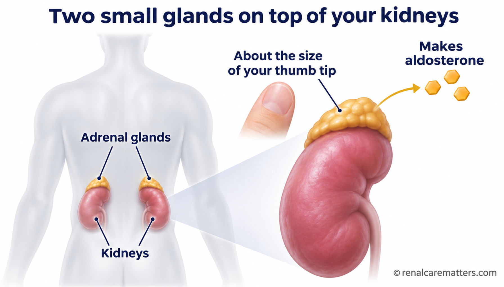
Your two adrenal glands sit on top of your kidneys. Each is about the size of a thumb tip, and they make aldosterone.Nakapatong ang dalawang adrenal gland sa ibabaw ng iyong bato. Kasinlaki ng dulo ng hinlalaki ang bawat isa, at gumagawa sila ng aldosterone.Ang duha ka adrenal gland naa sa ibabaw sa imong bato. Sama kadako sa tumoy sa kumagko ang matag usa, ug mohimo sila og aldosterone.Ing adwang adrenal gland atyu king babo ning batu mu. Kasing laki ning dulu ning gimalat ing balang metung, at gagawa la aldosterone.
Your two adrenal glands sit like small caps on top of the kidneys, and their outer layer makes aldosterone. Aldosterone acts on the last stretch of the kidney's tubes, the collecting ducts. It opens sodium channels so the kidney holds on to salt and water, and it swaps potassium out into the urine. More salt and water in the bloodstream raises blood pressure. Losing potassium can cause weakness, cramps, and heart rhythm problems, although in most people with primary aldosteronism the potassium level stays normal.Ang dalawang adrenal gland ay nakapatong na parang maliit na sumbrero sa ibabaw ng bato, at ang panlabas na bahagi nito ang gumagawa ng aldosterone. Kumikilos ang aldosterone sa huling bahagi ng mga tubo ng bato, ang collecting ducts. Binubuksan nito ang mga daluyan ng sodium para panatilihin ng bato ang asin at tubig, at ipinagpapalit nito ang potassium palabas sa ihi. Mas maraming asin at tubig sa dugo ang nagpapataas ng presyon. Ang pagkawala ng potassium ay maaaring magdulot ng panghihina, pulikat, at problema sa tibok ng puso, bagaman sa karamihan ng may primary aldosteronism ay normal ang potassium.Ang duha ka adrenal gland naglingkod sama sa gamay nga kalo sa ibabaw sa bato, ug ang gawas nga bahin niini ang mohimo og aldosterone. Molihok ang aldosterone sa katapusang bahin sa mga tubo sa bato, ang collecting ducts. Ablihan niini ang mga agianan sa sodium aron tipigan sa bato ang asin ug tubig, ug ibaylo niini ang potassium pagawas sa ihi. Mas daghang asin ug tubig sa dugo ang mopataas sa presyon. Ang pagkawala sa potassium mahimong hinungdan sa kaluya, kalambre, ug problema sa pitik sa kasingkasing, bisan pa nga sa kadaghanan nga adunay primary aldosteronism normal ang potassium.Ing adwang adrenal gland makatuknang anti malating sambalilu king babo ning batu, at ing panlabas a bage na ing gagawa aldosterone. Kikilus ya ing aldosterone king tauling bage dareng tubu ning batu, ing collecting ducts. Ibuklat na la reng dalanan ning sodium ban itagu ning batu ing asin at danum, at isalili na ing potassium palwal king ihi. Mas dakal a asin at danum king daya ing mamatas king presyun. Ing pamakawala ning potassium malyaring magdulot kaluya, pulikat, at problema king pitik ning pusu, oneng king kayanakung atin primary aldosteronism normal ya ing potassium.
Aldosterone also acts directly on the heart, the blood vessels, and the kidneys. Over years, too much of it promotes inflammation, stiffening, and scarring (fibrosis) in these organs. That is why primary aldosteronism causes more heart and kidney damage than the same blood pressure from other causes.Direkta ring kumikilos ang aldosterone sa puso, mga ugat, at bato. Sa paglipas ng mga taon, ang sobra nito ay nagdudulot ng pamamaga, paninigas, at pagpepeklat (fibrosis) sa mga organong ito. Kaya mas maraming pinsala sa puso at bato ang dulot ng primary aldosteronism kaysa sa parehong presyon mula sa ibang sanhi.Direkta usab nga molihok ang aldosterone sa kasingkasing, mga ugat, ug bato. Sulod sa mga tuig, ang sobra niini mopahinabo og panghubag, pagkagahi, ug pagpeklat (fibrosis) niining mga organo. Mao nga mas daghang kadaot sa kasingkasing ug bato ang hinungdan sa primary aldosteronism kaysa sa samang presyon gikan sa ubang hinungdan.Direktu ya mu naman kikilus ing aldosterone king pusu, kareng ugat, at batu. King pamaglabas dareng banwa, ing sobra na magdulot pamagbaga, pamanigas, at pamagpeklat (fibrosis) kareng organu a reti. Kaya mas dakal a pamakasira king pusu at batu ing dulot ning primary aldosteronism kesa king pareung presyun a menibat king aliwang sanhi.
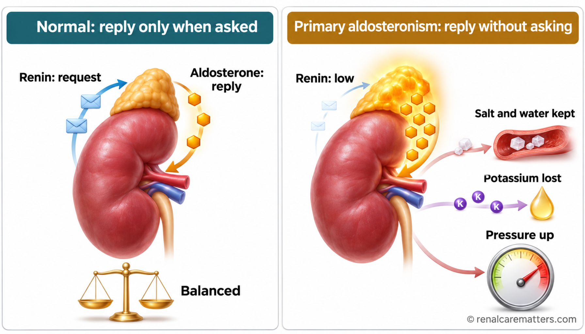
Request and reply: normally the adrenal gland releases aldosterone only when renin asks for it. In primary aldosteronism, it releases aldosterone on its own, renin falls, salt and water are kept, potassium is lost, and blood pressure rises.Kahilingan at sagot: karaniwan, naglalabas lang ng aldosterone ang adrenal gland kapag hinihiling ng renin. Sa primary aldosteronism, kusa itong naglalabas, bumababa ang renin, naiipon ang asin at tubig, nawawala ang potassium, at tumataas ang presyon.Hangyo ug tubag: kasagaran, mopagawas lang og aldosterone ang adrenal gland kung hangyoon sa renin. Sa primary aldosteronism, mopagawas kini sa kaugalingon, mous-os ang renin, matipon ang asin ug tubig, mawala ang potassium, ug mosaka ang presyon.Pakisabi at sagot: karaniwan, pipalwal yamu aldosterone ing adrenal gland nung pakisabyan ning renin. King primary aldosteronism, kusang pipalwal ya, mababa ing renin, mitipun ing asin at danum, mawala ing potassium, at tutaas ing presyun.
An analogy, and its limitIsang paghahambing, at ang hangganan nitoUsa ka pagtandi, ug ang utlanan niiniMetung a pamanalunga, at ing angganan na
"Request and reply" explains why the test measures both hormones together. Real life is messier: medicines, salt intake, potassium, and kidney disease all nudge renin and aldosterone. That is why your doctor reads the result in context, not as a single pass-or-fail number.Ipinapaliwanag ng "kahilingan at sagot" kung bakit sabay sinusukat ang dalawang hormone. Mas magulo ang totoong buhay: ang mga gamot, dami ng asin na kinakain, potassium, at sakit sa bato ay pawang nakaaapekto sa renin at aldosterone. Kaya binabasa ng doktor ang resulta ayon sa buong sitwasyon, hindi bilang iisang numerong pasado o bagsak.Gipasabot sa "hangyo ug tubag" kung nganong dungan nga gisukod ang duha ka hormone. Mas gubot ang tinuod nga kinabuhi: ang mga tambal, gidaghanon sa asin nga gikaon, potassium, ug sakit sa bato tanan makaapekto sa renin ug aldosterone. Mao nga basahon sa doktor ang resulta sumala sa tibuok sitwasyon, dili isip usa lang ka numero nga pasar o bagsak.Ipaliwanag ning "pakisabi at sagot" nung bakit sabay dang susukatan ing adwang hormone. Mas magulu ing tutung bie: deng gamut, dakal ning asin a kakanan, potassium, at sakit king batu, sablang makaapektu king renin at aldosterone. Kaya babasan ning doktor ing resulta agpang king buung sitwasyun, ali bilang metung a numerung pasado o bagsak.
Why finding it mattersBakit mahalagang matuklasan itoNganong importante nga makit-an kiniNung bakit mayalaga ing makit ya
Primary aldosteronism is not rare. Among people with high blood pressure seen in general clinics, roughly 5 to 14 in every 100 have it, and the share is higher when blood pressure is hard to control. In a U.S. study that gave everyone a salt-loading test, about 1 in 5 people with resistant hypertension had clear-cut primary aldosteronism. A study of newly diagnosed hypertension in a Chinese community clinic found it in at least 4 in 100.Hindi bihira ang primary aldosteronism. Sa mga taong may altapresyon na nagpapatingin sa pangkalahatang klinika, mga 5 hanggang 14 sa bawat 100 ang mayroon nito, at mas mataas ang bahagdan kapag mahirap kontrolin ang presyon. Sa isang pag-aaral sa U.S. na binigyan ng salt-loading test ang lahat, mga 1 sa 5 taong may resistant hypertension ang malinaw na may primary aldosteronism. Sa isang pag-aaral ng bagong altapresyon sa isang klinika sa China, natagpuan ito sa hindi bababa sa 4 sa 100.Dili talagsaon ang primary aldosteronism. Sa mga tawo nga adunay altapresyon nga nagpatan-aw sa kinatibuk-ang klinika, mga 5 hangtod 14 sa matag 100 ang aduna niini, ug mas taas ang bahin kung lisod kontrolon ang presyon. Sa usa ka pagtuon sa U.S. nga gihatagan og salt-loading test ang tanan, mga 1 sa 5 ka tawo nga adunay resistant hypertension ang klaro nga adunay primary aldosteronism. Sa usa ka pagtuon sa bag-ong altapresyon sa usa ka klinika sa China, nakit-an kini sa dili moubos sa 4 sa 100.Ali ya bihira ing primary aldosteronism. Kareng tau a atin altapresyun a magpalawe king pangkalahatang klinika, intang 5 anggang 14 king balang 100 ing atin kaniti, at mas matas ing bahagdan nung masakit kontrolan ing presyun. King metung a pamanigaral king U.S. a binyan da salt-loading test ing sablang tau, intang 1 king 5 a tau a atin resistant hypertension ing malino a atin primary aldosteronism. King metung a pamanigaral king bayung altapresyun king klinika king China, akit ya king e babang 4 king 100.
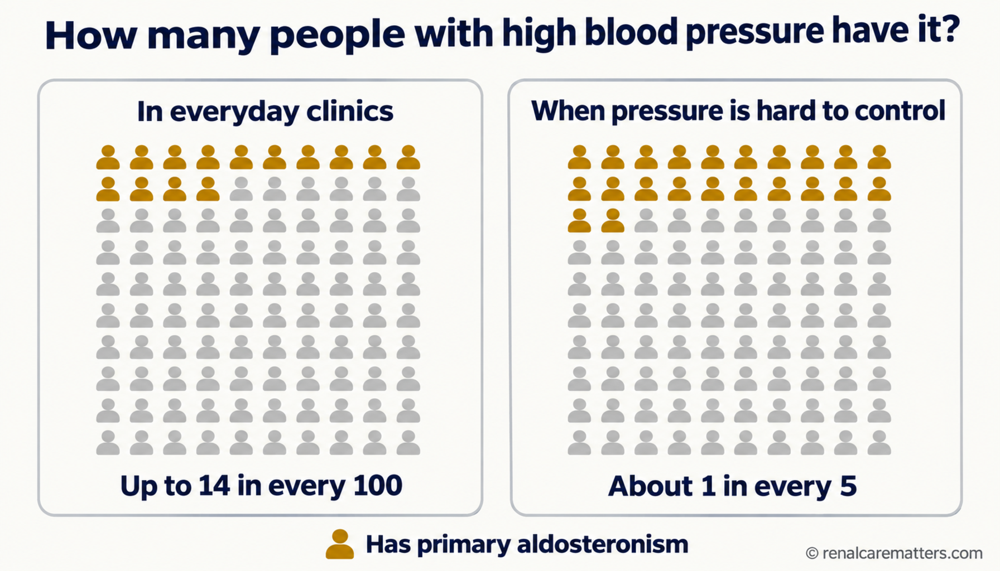
Out of 100 people with high blood pressure, up to 14 in everyday clinics have primary aldosteronism, and about 1 in 5 when pressure is hard to control.Sa 100 taong may altapresyon, hanggang 14 sa karaniwang klinika ang may primary aldosteronism, at mga 1 sa 5 kapag mahirap kontrolin ang presyon.Sa 100 ka tawo nga adunay altapresyon, hangtod 14 sa kasagarang klinika ang adunay primary aldosteronism, ug mga 1 sa 5 kung lisod kontrolon ang presyon.King 100 a tau a atin altapresyun, anggang 14 king karaniwang klinika ing atin primary aldosteronism, at intang 1 king 5 nung masakit kontrolan ing presyun.
People with primary aldosteronism have more strokes, heart attacks, heart failure, and an irregular heartbeat called atrial fibrillation than people with the same blood pressure from ordinary (essential) hypertension. One large analysis found about 2.6 times the odds of stroke and 3.5 times the odds of atrial fibrillation. Excess aldosterone also overworks the kidney filters, which raises protein in the urine and speeds kidney decline.Mas maraming stroke, atake sa puso, heart failure, at hindi regular na tibok ng puso na tinatawag na atrial fibrillation ang mga may primary aldosteronism kaysa sa mga may parehong presyon mula sa karaniwang (essential) hypertension. Sa isang malaking pagsusuri, mga 2.6 na beses ang tsansa ng stroke at 3.5 na beses ang tsansa ng atrial fibrillation. Pinapagod din ng sobrang aldosterone ang mga pansala ng bato, kaya tumataas ang protina sa ihi at bumibilis ang paghina ng bato.Mas daghang stroke, atake sa kasingkasing, heart failure, ug dili regular nga pitik sa kasingkasing nga gitawag og atrial fibrillation ang mga adunay primary aldosteronism kaysa sa mga adunay samang presyon gikan sa ordinaryong (essential) hypertension. Sa usa ka dako nga pagtuki, mga 2.6 ka pilo ang tsansa sa stroke ug 3.5 ka pilo ang tsansa sa atrial fibrillation. Gikapoy usab sa sobrang aldosterone ang mga pansala sa bato, mao nga mosaka ang protina sa ihi ug mopaspas ang pagkaluya sa bato.Mas dakal a stroke, atake king pusu, heart failure, at ali regular a pitik ning pusu a aus dang atrial fibrillation ing atin primary aldosteronism kesa kareng atin pareung presyun a menibat king karaniwang (essential) hypertension. King metung a maragul a pamanaliksik, intang 2.6 a beses ing tsansa ning stroke at 3.5 a beses ing tsansa ning atrial fibrillation. Pakapuyan ne mu naman ning sobrang aldosterone deng pansala ning batu, kaya tutaas ing protina king ihi at mamagbilis ing pamanyaga ning batu.
Yet very few people are ever tested. In a large study of U.S. veterans with resistant hypertension, fewer than 2 in 100 had the blood test. The good news is that primary aldosteronism has treatments aimed at its cause, and testing starts with one blood draw.Gayunman, iilan lang ang nasusuri. Sa isang malaking pag-aaral ng mga beterano sa U.S. na may resistant hypertension, wala pang 2 sa 100 ang nakapagpa-blood test. Ang magandang balita: may mga gamutang tumutugon sa mismong sanhi ng primary aldosteronism, at nagsisimula ang pagsusuri sa isang pagkuha ng dugo.Apan, gamay ra ang nasusi. Sa usa ka dako nga pagtuon sa mga beterano sa U.S. nga adunay resistant hypertension, wala pay 2 sa 100 ang nakapa-blood test. Ang maayong balita: adunay mga pagtambal nga motubag sa mismong hinungdan sa primary aldosteronism, ug magsugod ang pagsusi sa usa ka pagkuha og dugo.Oneng, kakaunti mu ing masuyuran. King metung a maragul a pamanigaral dareng beterano king U.S. a atin resistant hypertension, ali pa 2 king 100 ing mekapag-blood test. Ing mayap a balita: atin lang pamanulu a tutugun king mismung sanhi ning primary aldosteronism, at mumpisa ing pamanuyu king metung a pamikuang daya.
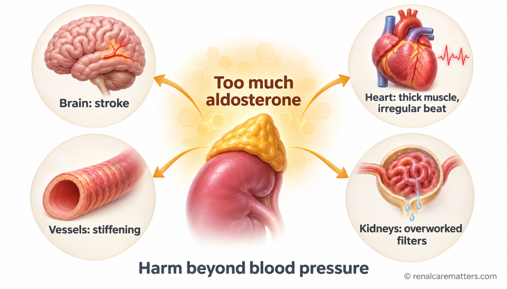
More than pressure: excess aldosterone acts on the brain, heart, blood vessels, and kidneys, which is why its harm exceeds what blood pressure alone would predict.Higit pa sa presyon: kumikilos ang sobrang aldosterone sa utak, puso, mga ugat, at bato, kaya mas malaki ang pinsala nito kaysa inaasahan sa presyon lang.Labaw pa sa presyon: molihok ang sobrang aldosterone sa utok, kasingkasing, mga ugat, ug bato, mao nga mas dako ang kadaot niini kaysa gipaabot sa presyon lang.Ibat pa king presyun: kikilus ing sobrang aldosterone king utak, pusu, ugat, at batu, kaya mas maragul ing pamakasira na kesa ing apaburen king presyun mu.
Should I ask about screening?Dapat ba akong magtanong tungkol sa screening?Angay ba ko mangutana bahin sa screening?Dapat ku bang mangutang tungkul king screening?
Ask your doctor about an aldosterone and renin blood test if any of these apply to you:Tanungin ang iyong doktor tungkol sa aldosterone at renin blood test kung alinman dito ang totoo sa iyo:Pangutan-a ang imong doktor bahin sa aldosterone ug renin blood test kung bisan unsa niini ang tinuod kanimo:Kutnan me ing doktor mu tungkul king aldosterone at renin blood test nung nanuman kareti ing tutu keka:
- Blood pressure that stays above goal on 3 medicines including a water pill (diuretic), or that needs 4 or more medicines to controlPresyon na nananatiling lampas sa target kahit 3 gamot kasama ang pampaihi (diuretic), o nangangailangan ng 4 o higit pang gamot para makontrolPresyon nga magpabilin nga lapas sa target bisan sa 3 ka tambal apil ang pampaihi (diuretic), o nagkinahanglan og 4 o labaw pa nga tambal aron makontrolPresyun a manatiling lagpas king target kahit 3 a gamut kayabe ing pamipaihi (diuretic), o mangailangan 4 o mas dakal a gamut ban makontrol
- Low potassium in a blood test, whether it happened on its own or while taking a water pillMababang potassium sa blood test, kusa man o habang umiinom ng pampaihiUbos nga potassium sa blood test, kusa man o samtang moinom og pampaihiMababang potassium king blood test, kusa man o kabang uminum pamipaihi
- A lump (nodule) on an adrenal gland seen on a scan done for another reasonBukol (nodule) sa adrenal gland na nakita sa scan na ginawa para sa ibang dahilanBukol (nodule) sa adrenal gland nga nakita sa scan nga gihimo alang sa laing hinungdanBukol (nodule) king adrenal gland a akit king scan a megawa para king aliwang sanhi
- Loud snoring with pauses in breathing (sleep apnea) together with high blood pressureMalakas na hilik na may paghinto sa paghinga (sleep apnea) kasabay ng altapresyonKusog nga hagok nga adunay paghunong sa pagginhawa (sleep apnea) uban sa altapresyonMakusug a ngurik a atin pamitigil king pamanginga (sleep apnea) kayabe ing altapresyun
- High blood pressure that started before age 40, or a stroke at a young ageAltapresyon na nagsimula bago mag-40 taong gulang, o stroke sa murang edadAltapresyon nga nagsugod sa wala pa mag-40 anyos, o stroke sa batan-ong edadAltapresyun a megumpisa bayu mag-40 banwa, o stroke king bata pang edad
- A parent, brother, or sister with primary aldosteronism, or a family history of early high blood pressure or strokeMagulang o kapatid na may primary aldosteronism, o kasaysayan sa pamilya ng maagang altapresyon o strokeGinikanan o igsoon nga adunay primary aldosteronism, o kasaysayan sa pamilya sa sayo nga altapresyon o strokePengari o kapatad a atin primary aldosteronism, o kasaysayan king pamilya ning maagang altapresyun o stroke
Normal potassium does not rule it out. Most people with primary aldosteronism have normal potassium. The 2025 Endocrine Society guideline goes further and suggests testing everyone with high blood pressure when testing is available, while heart-society guidelines focus first on the higher-risk groups above.Hindi ito naaalis ng normal na potassium. Karamihan ng may primary aldosteronism ay may normal na potassium. Mas malawak pa ang 2025 Endocrine Society guideline: iminumungkahi nitong suriin ang lahat ng may altapresyon kung may makukuhang test, habang inuuna ng mga guideline ng heart society ang mga grupong mas mataas ang panganib sa itaas.Dili kini makuha sa normal nga potassium. Kadaghanan sa adunay primary aldosteronism adunay normal nga potassium. Mas lapad pa ang 2025 Endocrine Society guideline: gisugyot niini nga susihon ang tanan nga adunay altapresyon kung adunay test, samtang giuna sa mga guideline sa heart society ang mga grupo nga mas taas ang peligro sa ibabaw.Ali ya mealis ning normal a potassium. Ing kayanakung atin primary aldosteronism atin normal a potassium. Mas malapad pa ing 2025 Endocrine Society guideline: imungkai na ing pamanuyu king sablang atin altapresyun nung atin makwang test, kabang unan dareng guideline ning heart society deng grupung mas matas ing panganib king babo.
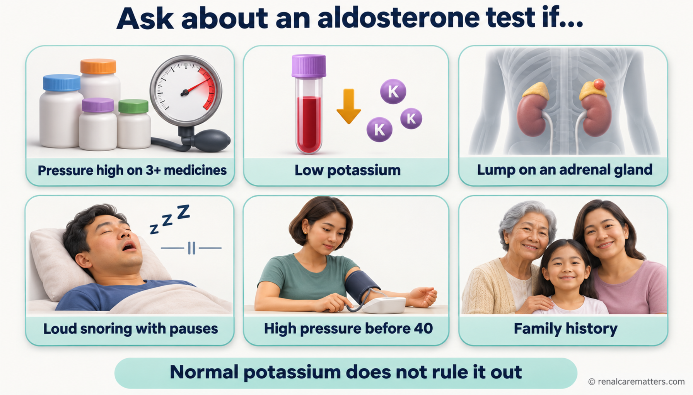
Six reasons to ask about an aldosterone and renin test. A normal potassium does not rule out primary aldosteronism.Anim na dahilan para magtanong tungkol sa aldosterone at renin test. Hindi naaalis ng normal na potassium ang primary aldosteronism.Unom ka rason aron mangutana bahin sa aldosterone ug renin test. Dili makuha sa normal nga potassium ang primary aldosteronism.Anam a sanhi ban mangutang tungkul king aldosterone at renin test. Ali ya mealis ning normal a potassium ing primary aldosteronism.
What happens at the blood testAno ang nangyayari sa blood testUnsa ang mahitabo sa blood testNanu ing malyari king blood test
The first test is a single blood sample, usually taken in the morning after you have been up for a while and seated for a few minutes. It measures three things:Ang unang test ay isang sample ng dugo, karaniwang kinukuha sa umaga matapos kang gising nang ilang oras at nakaupo nang ilang minuto. Tatlong bagay ang sinusukat nito:Ang unang test usa ka sample sa dugo, kasagaran kuhaon sa buntag human ka nakamata sulod sa pipila ka oras ug nakalingkod sulod sa pipila ka minuto. Tulo ka butang ang sukdon niini:Ing mumunang test metung a sample ning daya, karaniwan kukwanan king abak kaibat mung mipukat pilan a oras at makalukluk pilan a minutu. Atlung bage ing susukatan na:
- Aldosterone: the salt-keeping hormone.Aldosterone: ang hormone na nagtatago ng asin.Aldosterone: ang hormone nga nagtipig sa asin.Aldosterone: ing hormone a manyimpan asin.
- Renin: the kidney's "request" signal. Labs report it in one of two ways, as plasma renin activity (PRA) or direct renin concentration (DRC). The numbers and cutoffs differ, so the type matters.Renin: ang senyas na "kahilingan" ng bato. Iniuulat ito ng lab sa isa sa dalawang paraan, bilang plasma renin activity (PRA) o direct renin concentration (DRC). Magkaiba ang mga numero at cutoff, kaya mahalaga kung alin.Renin: ang senyas nga "hangyo" sa bato. Gi-report kini sa lab sa usa sa duha ka paagi, isip plasma renin activity (PRA) o direct renin concentration (DRC). Lahi ang mga numero ug cutoff, mao nga importante kung hain.Renin: ing senyas a "pakisabi" ning batu. Ireport ne ning lab king metung kareng adwang paralan, bilang plasma renin activity (PRA) o direct renin concentration (DRC). Miyayaliwa la reng numeru at cutoff, kaya mayalaga nung nanu ya.
- Potassium: low potassium can lower aldosterone and hide the condition, so it is checked from the same sample.Potassium: maaaring ibaba ng mababang potassium ang aldosterone at itago ang kondisyon, kaya sinusuri ito sa parehong sample.Potassium: ang ubos nga potassium mahimong mopaubos sa aldosterone ug motago sa kondisyon, mao nga susihon kini sa samang sample.Potassium: ing mababang potassium malyaring mamababa king aldosterone at itagu ing kundisyun, kaya susuyuran ya king pareung sample.
Your doctor then calculates the aldosterone-to-renin ratio (ARR) and reads it together with each number on its own.Kinakalkula ng doktor ang aldosterone-to-renin ratio (ARR) at binabasa ito kasama ng bawat numero.Kuwentahon sa doktor ang aldosterone-to-renin ratio (ARR) ug basahon kini uban sa matag numero.Kuwentan ning doktor ing aldosterone-to-renin ratio (ARR) at basan ne kayabe ing balang numeru.
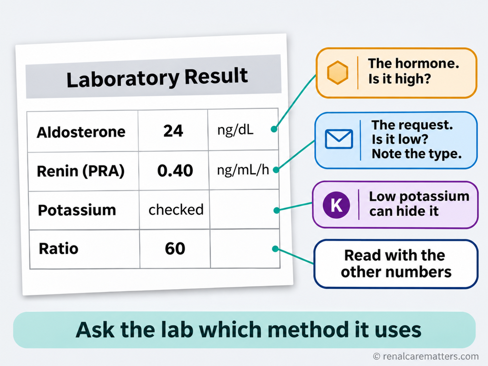
How to read your result: aldosterone is the hormone, renin is the request (note its type), low potassium can hide the condition, and the ratio is read with the other numbers.Paano basahin ang resulta: ang aldosterone ang hormone, ang renin ang kahilingan (tandaan ang uri), maaaring itago ng mababang potassium ang kondisyon, at binabasa ang ratio kasama ng ibang numero.Unsaon pagbasa sa resulta: ang aldosterone ang hormone, ang renin ang hangyo (timan-i ang klase), ang ubos nga potassium makatago sa kondisyon, ug basahon ang ratio uban sa ubang numero.Makananu basan ing resulta: ing aldosterone ya ing hormone, ing renin ya ing pakisabi (tandanan ing uri), ing mababang potassium malyaring magtagu king kundisyun, at babasan ing ratio kayabe ing aliwang numeru.
- PRA
- Plasma renin activity
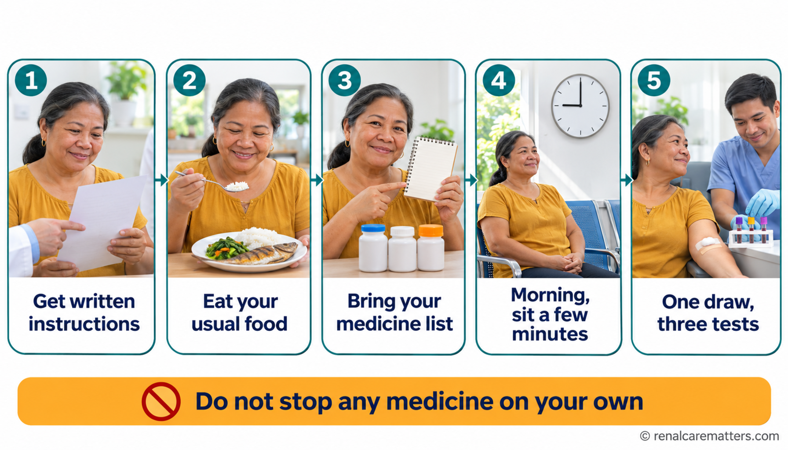
Test day in five steps: written instructions, usual food, your medicine list, a morning sample after sitting, and one draw for three tests. Never stop a medicine on your own.Araw ng test sa limang hakbang: nakasulat na tagubilin, karaniwang pagkain, listahan ng gamot, sample sa umaga matapos umupo, at isang kuha ng dugo para sa tatlong test. Huwag ihinto ang gamot nang mag-isa.Adlaw sa test sa lima ka lakang: sinulat nga instruksyon, kasagarang pagkaon, listahan sa tambal, sample sa buntag human molingkod, ug usa ka kuha og dugo para sa tulo ka test. Ayaw hunonga ang tambal sa imong kaugalingon.Aldo ning test king limang addang: nakasulat a turu, karaniwang pamangan, listahan ning gamut, sample king abak kaibat lumukluk, at metung a pamikuang daya para king atlung test. Eme itian ing gamut king sarili mu.
Before the test: doBago ang test: gawinSa dili pa ang test: buhataBayu ing test: gawan
- Ask for written instructions about your medicines, potassium, and food in the days before the draw.Humingi ng nakasulat na tagubilin tungkol sa gamot, potassium, at pagkain sa mga araw bago kunan ng dugo.Pangayo og sinulat nga instruksyon bahin sa tambal, potassium, ug pagkaon sa mga adlaw sa dili pa kuhaan og dugo.Mamakisabi nakasulat a turu tungkul king gamut, potassium, at pamangan kareng aldo bayu kwanan daya.
- Eat your usual amount of salt unless told otherwise. Do not start a strict low-salt diet just for the test.Kumain ng karaniwang dami ng asin maliban kung iba ang sinabi. Huwag magsimula ng mahigpit na low-salt diet para lang sa test.Kaon sa kasagarang gidaghanon sa asin gawas kung lahi ang giingon. Ayaw pagsugod og estrikto nga low-salt diet para lang sa test.Mangan king karaniwang dakal ning asin nung e aliwa ing sinabi. Eme mumpisa mabilug a low-salt diet para mu king test.
- Bring a full list of medicines and supplements, including herbal teas or candies with licorice and birth control pills.Magdala ng buong listahan ng gamot at supplement, kasama ang herbal tea o kendi na may licorice at pills.Pagdala og kompleto nga listahan sa tambal ug supplement, apil ang herbal tea o kendi nga adunay licorice ug pills.Magdala buung listahan ning gamut at supplement, kayabe ing herbal tea o kendi a atin licorice at pills.
- Bring recent potassium and creatinine results and a week of home blood pressure readings.Dalhin ang pinakabagong resulta ng potassium at creatinine at isang linggong talaan ng presyon sa bahay.Dad-a ang pinakabag-ong resulta sa potassium ug creatinine ug usa ka semana nga talaan sa presyon sa balay.Dalan ing pekabayung resulta ning potassium at creatinine at metung a dominggung talaan ning presyun king bale.
Before the test: don'tBago ang test: huwagSa dili pa ang test: ayawBayu ing test: eme
- Do not stop or change any blood pressure medicine on your own. Some can only be switched under supervision, because stopping them suddenly can be dangerous.Huwag ihinto o baguhin ang anumang gamot sa presyon nang mag-isa. Ang ilan ay mapapalitan lang nang may gabay, dahil mapanganib ang biglang paghinto.Ayaw hunonga o usba ang bisan unsang tambal sa presyon sa imong kaugalingon. Ang uban mailisan lang ubos sa giya, kay delikado ang kalit nga paghunong.Eme itian o bayuan ing anumang gamut king presyun king sarili mu. Ing pilan malyaring salilan mu nung atin gabay, uling delikadu ing biglang pamitigil.
- Do not start or stop potassium tablets on your own. Your doctor may correct a low potassium before the test.Huwag magsimula o huminto ng potassium tablet nang mag-isa. Maaaring itama muna ng doktor ang mababang potassium bago ang test.Ayaw pagsugod o paghunong sa potassium tablet sa imong kaugalingon. Mahimong tul-iron una sa doktor ang ubos nga potassium sa dili pa ang test.Eme mumpisa o mitigil potassium tablet king sarili mu. Malyaring itama pa ning doktor ing mababang potassium bayu ing test.
- Avoid pain relievers such as ibuprofen or mefenamic acid in the days before, unless your doctor says they are fine. They can lower renin.Iwasan ang pain reliever gaya ng ibuprofen o mefenamic acid sa mga araw bago ang test, maliban kung pinayagan ng doktor. Maaari nilang ibaba ang renin.Likayi ang pain reliever sama sa ibuprofen o mefenamic acid sa mga adlaw sa dili pa ang test, gawas kung gitugotan sa doktor. Mahimo nilang paubson ang renin.Iwasan ing pain reliever anti ing ibuprofen o mefenamic acid kareng aldo bayu ing test, nung e pinabaye ning doktor. Malyari dang ibaba ing renin.
Why your medicines matterBakit mahalaga ang iyong mga gamotNganong importante ang imong mga tambalNung bakit mayalaga deng gamut mu
Many blood pressure medicines push renin or aldosterone up or down. Your doctor may test you first on your usual medicines, because a positive result despite these medicines is still meaningful. If the result is unclear, a supervised switch lasting 2 to 4 weeks may be planned. Never do this on your own.Maraming gamot sa presyon ang nagtutulak pataas o pababa sa renin o aldosterone. Maaaring suriin ka muna ng doktor habang umiinom ng karaniwang gamot, dahil may kahulugan pa rin ang positibong resulta kahit may mga gamot na ito. Kung hindi malinaw ang resulta, maaaring magplano ng palit-gamot na may gabay sa loob ng 2 hanggang 4 na linggo. Huwag itong gawin nang mag-isa.Daghang tambal sa presyon ang moduso pataas o paubos sa renin o aldosterone. Mahimong susihon ka una sa doktor samtang moinom sa kasagarang tambal, kay adunay kahulogan gihapon ang positibo nga resulta bisan pa niining mga tambal. Kung dili klaro ang resulta, mahimong magplano og pag-ilis sa tambal ubos sa giya sulod sa 2 hangtod 4 ka semana. Ayaw kini buhata sa imong kaugalingon.Dakal a gamut king presyun ing manulak paitas o pababa king renin o aldosterone. Malyari kang suyuran pa ning doktor kabang uminum king karaniwang gamut, uling atin pa rin kahulugan ing positibung resulta kahit atin kareng gamut. Nung ali malino ing resulta, malyaring magplanu pamanalili gamut a atin gabay king lub ning 2 anggang 4 a domingu. Eme gawan iti king sarili mu.
What does the ratio mean, especially with kidney disease?Ano ang ibig sabihin ng ratio, lalo na kung may sakit sa bato?Unsa ang buot ipasabot sa ratio, labi na kung adunay sakit sa bato?Nanu ing buri nang sabyan ning ratio, lalu na nung atin sakit king batu?
The ratio is aldosterone divided by renin. Like any fraction, it gets big either when the top number is high or when the bottom number is very small. That is why your doctor never reads the ratio alone. Here are two people with exactly the same ratio:Ang ratio ay aldosterone na hinati sa renin. Tulad ng anumang fraction, lumalaki ito kapag mataas ang nasa itaas o kapag napakaliit ng nasa ibaba. Kaya hindi kailanman binabasa ng doktor ang ratio nang mag-isa. Narito ang dalawang tao na may eksaktong parehong ratio:Ang ratio mao ang aldosterone nga gibahin sa renin. Sama sa bisan unsang fraction, modako kini kung taas ang naa sa ibabaw o kung gamay kaayo ang naa sa ubos. Mao nga dili gayud basahon sa doktor ang ratio nga mag-inusara. Ania ang duha ka tawo nga adunay eksaktong samang ratio:Ing ratio ya ing aldosterone a binaki king renin. Anti ing anumang fraction, lalagu ya nung matas ing atyu king babo o nung kaliitan ing atyu king lalam. Kaya ali nanu man basan ning doktor ing ratio nung bukud. Oyni ing adwang tau a eksaktung pareu ing ratio:
Person A: ratio 60Tao A: ratio 60Tawo A: ratio 60Tau A: ratio 60
Aldosterone 6, renin 0.10. The ratio is high mainly because renin is very low; aldosterone itself is not high. This may call for a repeat test under better conditions rather than a diagnosis.Aldosterone 6, renin 0.10. Mataas ang ratio pangunahin dahil napakababa ng renin; hindi mataas ang aldosterone mismo. Maaaring kailanganin ang ulit na test sa mas maayos na kondisyon sa halip na diagnosis.Aldosterone 6, renin 0.10. Taas ang ratio kay ubos kaayo ang renin; dili taas ang aldosterone mismo. Mahimong kinahanglan ang usab nga test sa mas maayo nga kondisyon imbis nga diagnosis.Aldosterone 6, renin 0.10. Matas ing ratio uling kababan ing renin; ali matas ing aldosterone mismu. Malyaring kailangan ing aliwang test king mas mayap a kundisyun kesa diagnosis.
Person B: ratio 60Tao B: ratio 60Tawo B: ratio 60Tau B: ratio 60
Aldosterone 24, renin 0.40. Same ratio, but now aldosterone is clearly high and renin is low. This pattern fits primary aldosteronism and leads to a talk about next steps.Aldosterone 24, renin 0.40. Parehong ratio, pero ngayon malinaw na mataas ang aldosterone at mababa ang renin. Tugma ang ganitong pattern sa primary aldosteronism at humahantong sa usapan tungkol sa susunod na hakbang.Aldosterone 24, renin 0.40. Samang ratio, apan karon klaro nga taas ang aldosterone ug ubos ang renin. Mohaum kini nga pattern sa primary aldosteronism ug mosangpot sa estorya bahin sa sunod nga lakang.Aldosterone 24, renin 0.40. Pareung ratio, pero ngeni malinong matas ing aldosterone at mababa ing renin. Tugma ya ing pattern a iti king primary aldosteronism at mamunta king pamisalita tungkul king susunud a addang.
Aldosterone in ng/dL; renin as PRA in ng/mL/h. Cutoffs depend on the laboratory method.Aldosterone sa ng/dL; renin bilang PRA sa ng/mL/h. Nakadepende ang cutoff sa paraan ng laboratoryo.Aldosterone sa ng/dL; renin isip PRA sa ng/mL/h. Nagdepende ang cutoff sa pamaagi sa laboratoryo.Aldosterone king ng/dL; renin bilang PRA king ng/mL/h. Makasalalay ing cutoff king paralan ning laboratoryu.
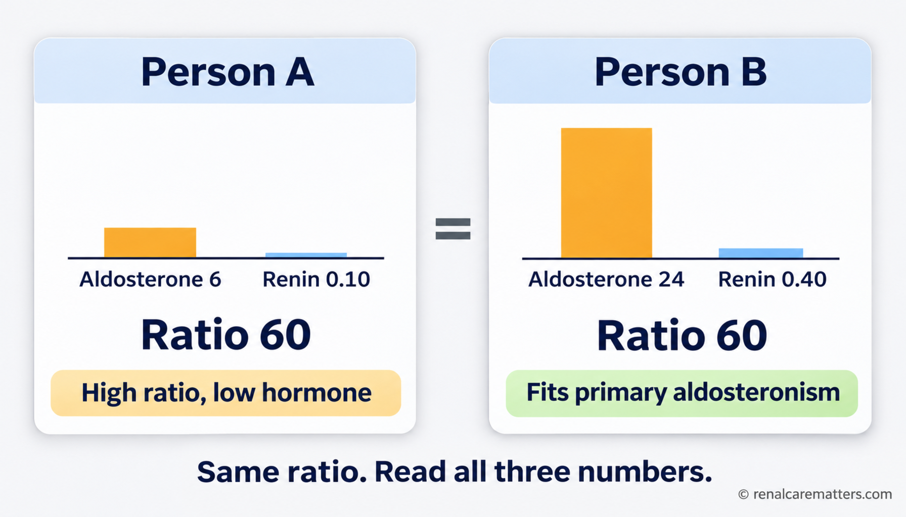
Same ratio, different meaning: a tiny renin can make the ratio high even when aldosterone is not. Your doctor reads all three numbers.Parehong ratio, magkaibang kahulugan: maaaring pataasin ng napakaliit na renin ang ratio kahit hindi mataas ang aldosterone. Binabasa ng doktor ang tatlong numero.Samang ratio, lahi nga kahulogan: ang gamay kaayo nga renin makapataas sa ratio bisan dili taas ang aldosterone. Basahon sa doktor ang tulo ka numero.Pareung ratio, miyayaliwang kahulugan: ing kaliitan a renin malyaring mamatas king ratio kahit ali matas ing aldosterone. Babasan ning doktor ing atlung numeru.
If you have chronic kidney diseaseKung may chronic kidney disease kaKung adunay chronic kidney diseaseNung atin kang chronic kidney disease
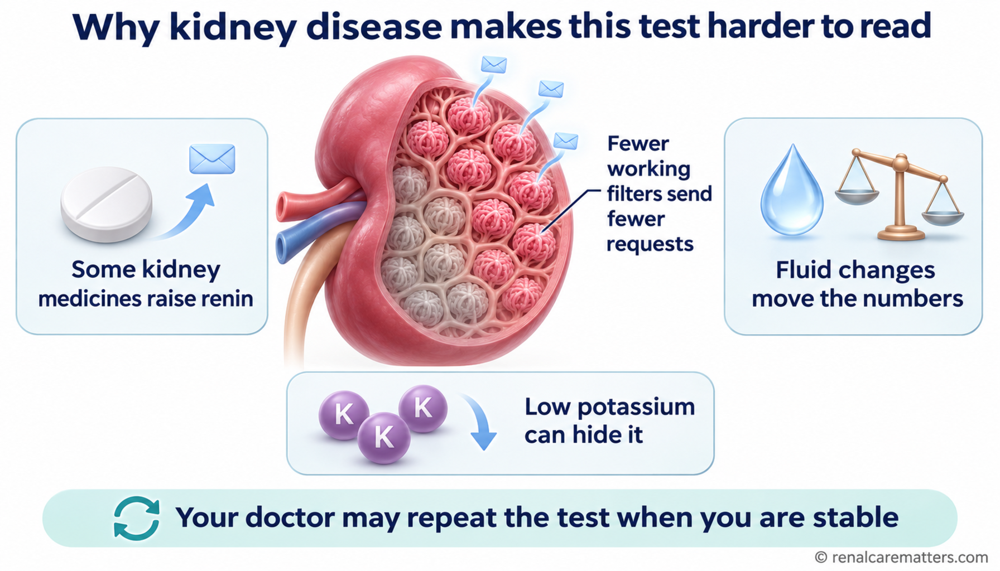
With kidney disease, fewer working filters send fewer renin signals, some kidney medicines raise renin, and fluid and potassium shift the numbers, so the test may be repeated when you are stable.Kapag may sakit sa bato, mas kaunting gumaganang pansala ang nagpapadala ng renin, may gamot sa bato na nagpapataas ng renin, at nagbabago ang numero dahil sa likido at potassium, kaya maaaring ulitin ang test kapag stable ka na.Kung adunay sakit sa bato, mas gamay nga naglihok nga pansala ang mopadala og renin, adunay tambal sa bato nga mopataas sa renin, ug mausab ang numero tungod sa likido ug potassium, mao nga mahimong usbon ang test kung stable na ka.Nung atin sakit king batu, mas kakaunting gagaganang pansala ing mamadala renin, atin gamut king batu a mamatas king renin, at mibayu ing numeru uli ning likidu at potassium, kaya malyaring ulitan ing test nung stable ka na.
With chronic kidney disease (CKD), reading the test is trickier. Damaged kidneys may release less renin, and aldosterone can rise, so the ratio can look high even without primary aldosteronism. Water pills, fluid overload, and low potassium can push the result in either direction. Your doctor weighs all three numbers, how likely the condition is for you, and may repeat the test once you are stable. Some kidney-protecting medicines, such as dapagliflozin and other sodium-glucose cotransporter 2 (SGLT2) inhibitors, raise renin too, so tell the team everything you take.Sa chronic kidney disease (CKD), mas mahirap basahin ang test. Maaaring kaunti ang renin na inilalabas ng napinsalang bato, at maaaring tumaas ang aldosterone, kaya maaaring mukhang mataas ang ratio kahit walang primary aldosteronism. Ang pampaihi, sobrang likido sa katawan, at mababang potassium ay maaaring magtulak sa resulta pataas o pababa. Tinitimbang ng doktor ang tatlong numero, gaano kalamang ang kondisyon sa iyo, at maaaring ulitin ang test kapag stable ka na. Ang ilang gamot na nagpoprotekta sa bato, gaya ng dapagliflozin at iba pang SGLT2 inhibitor, ay nagpapataas din ng renin, kaya sabihin sa team ang lahat ng iniinom mo.Sa chronic kidney disease (CKD), mas lisod basahon ang test. Mahimong gamay ra ang renin nga ipagawas sa nadaot nga bato, ug mahimong mosaka ang aldosterone, mao nga mahimong mura og taas ang ratio bisan walay primary aldosteronism. Ang pampaihi, sobra nga likido sa lawas, ug ubos nga potassium mahimong moduso sa resulta pataas o paubos. Timbangon sa doktor ang tulo ka numero, unsa ka lagmit ang kondisyon kanimo, ug mahimong usbon ang test kung stable na ka. Ang pipila ka tambal nga manalipod sa bato, sama sa dapagliflozin ug ubang SGLT2 inhibitor, mopataas usab sa renin, mao nga isulti sa team ang tanan nimong giinom.King chronic kidney disease (CKD), mas masakit basan ing test. Malyaring kakaunti ing renin a ipalwal ning masirang batu, at malyaring tumaas ing aldosterone, kaya malyaring mumuran matas ing ratio kahit alang primary aldosteronism. Ing pamipaihi, sobrang likidu king katawan, at mababang potassium malyaring manulak king resulta paitas o pababa. Tintimbangan ning doktor ing atlung numeru, makananu kalamang ing kundisyun keka, at malyari nang ulitan ing test nung stable ka na. Ing pilan a gamut a mamprotekta king batu, anti ing dapagliflozin at aliwang SGLT2 inhibitor, mamatas mu naman king renin, kaya sabyan me ing team king sablang iinuman mu.
If you are on dialysis, a kidney specialist should interpret the result, noting when the blood was drawn relative to your session, your fluid status, and how much urine you still make.Kung nagda-dialysis ka, dapat isang espesyalista sa bato ang magbasa ng resulta, isinasaalang-alang kung kailan kinuha ang dugo kaugnay ng iyong session, ang dami ng likido sa katawan, at gaano karami pa ang iyong ihi.Kung nag-dialysis ka, angay nga usa ka espesyalista sa bato ang mobasa sa resulta, tagdon kung kanus-a gikuha ang dugo kalabot sa imong session, ang gidaghanon sa likido sa lawas, ug pila pa ang imong ihi.Nung mag-dialysis ka, dapat metung a espesyalista king batu ing mamasa king resulta, isipan nung kapilan kinwa ing daya kaugnay ning session mu, ing dakal ning likidu king katawan, at pilan pa ing ihi mu.
Do I need another test?Kailangan ko ba ng isa pang test?Kinahanglan ba nako og laing test?Kailangan ku pa ba aliwang test?
What happens next depends on three things: your result, your kidney function, and whether you would consider surgery if it could help.Nakadepende ang susunod sa tatlong bagay: ang iyong resulta, ang lagay ng bato, at kung papayag ka sa operasyon kung makatutulong ito.Ang sunod nagdepende sa tulo ka butang: ang imong resulta, ang kahimtang sa bato, ug kung mouyon ka sa operasyon kung makatabang kini.Ing susunud makasalalay king atlung bage: ing resulta mu, ing kalagayan ning batu, at nung papayag ka king operasyun nung makasaup ya.
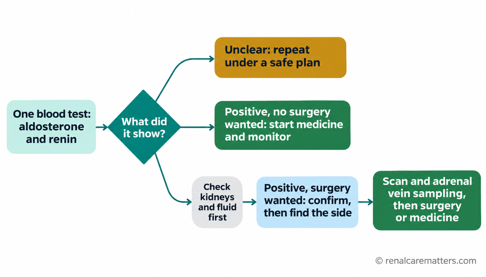
After the first blood test, the path splits: repeat under a safe plan, start medicine, or find the side before surgery. Kidney function is checked before any confirmation test.Pagkatapos ng unang blood test, nahahati ang landas: ulitin nang ligtas, magsimula ng gamot, o hanapin ang panig bago operahan. Sinusuri ang bato bago ang anumang confirmation test.Human sa unang blood test, mabahin ang dalan: usbon nga luwas, magsugod og tambal, o pangitaon ang kilid sa dili pa operahan. Susihon ang bato sa dili pa ang bisan unsang confirmation test.Kaibat ning mumunang blood test, mibaki ing dalan: ulitan a ligtas, mumpisa gamut, o anapan ing sulip bayu operan. Suyuran ing batu bayu ing anumang confirmation test.
- AVS
- Adrenal vein sampling
- CT
- Computed tomography
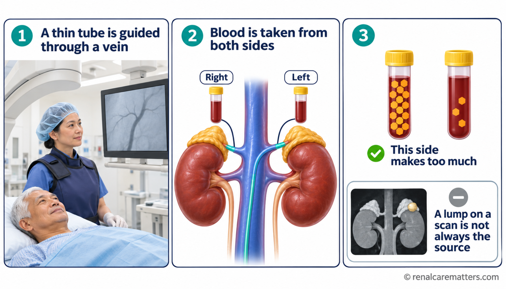
Adrenal vein sampling: a thin tube collects blood from both adrenal veins so the team can see which side makes too much aldosterone. A lump on a scan is not always the source.Adrenal vein sampling: kumukuha ang manipis na tubo ng dugo mula sa dalawang adrenal vein para makita kung aling panig ang sobra ang aldosterone. Hindi laging pinagmumulan ang bukol sa scan.Adrenal vein sampling: mokuha ang nipis nga tubo og dugo gikan sa duha ka adrenal vein aron makita kung hain nga kilid ang sobra og aldosterone. Dili kanunay gigikanan ang bukol sa scan.Adrenal vein sampling: mangwa ing manipis a tubu daya menibat king adwang adrenal vein ban akit nung nanung sulip ing sobra aldosterone. Ali panayan pipagmulan ing bukol king scan.
If you have kidney diseaseKung may sakit ka sa batoKung adunay sakit sa batoNung atin kang sakit king batu
CT and AVS use contrast dye. Ask how your kidneys will be protected: fluids, timing, and a creatinine check before and after. When an adrenal lump is found, a simple overnight dexamethasone test also checks whether the lump makes extra cortisol.Gumagamit ng contrast dye ang CT at AVS. Itanong kung paano poprotektahan ang bato mo: likido, oras, at pagsusuri ng creatinine bago at pagkatapos. Kapag may nakitang bukol sa adrenal, sinusuri rin ng simpleng overnight na dexamethasone test kung gumagawa ito ng sobrang cortisol.Mogamit og contrast dye ang CT ug AVS. Pangutan-a kung giunsa panalipdan ang imong bato: likido, oras, ug pagsusi sa creatinine sa wala pa ug human. Kung adunay makit-ang bukol sa adrenal, susihon usab sa yano nga overnight nga dexamethasone test kung mohimo kini og sobra nga cortisol.Gagamit contrast dye ing CT at AVS. Kutnan mu nung makananu dang protektan ing batu mu: likidu, oras, at pamanuyu king creatinine bayu at kaibat. Nung atin akit a bukol king adrenal, suyuran da mu naman king simpleng overnight a dexamethasone test nung gagawa yang sobrang cortisol.
Surgery or medicine: how to chooseOperasyon o gamot: paano pipiliOperasyon o tambal: unsaon pagpiliOperasyun o gamut: makananu mamili
| Surgery (removing one adrenal gland)Operasyon (pag-alis ng isang adrenal gland)Operasyon (pagkuha sa usa ka adrenal gland)Operasyun (pamanalis king metung a adrenal gland) | Medicine (aldosterone blocker)Gamot (pangharang sa aldosterone)Tambal (pangbabag sa aldosterone)Gamut (pamigil king aldosterone) | |
|---|---|---|
| Who it fitsPara kaninoPara kang kinsaPara kaninu | Only one gland is the source, you want surgery, and you are fit for it.Isang gland lang ang pinagmumulan, gusto mo ng operasyon, at kaya mo ito.Usa ra ka gland ang gigikanan, gusto nimo ang operasyon, ug kaya nimo kini.Metung yamu a gland ing pipagmulan, buri mu ing operasyun, at kaya mu ya. | Both glands are involved, the side is unclear, or surgery is not wanted or too risky.Parehong gland ang sangkot, hindi malinaw ang panig, o ayaw o mapanganib ang operasyon.Duha ka gland ang apil, dili klaro ang kilid, o dili gusto o delikado ang operasyon.Adwang gland ing kasali, ali malino ing sulip, o ali buri o delikadu ing operasyun. |
| How it worksPaano ito gumaganaUnsaon kini paglihokMakananu ya gagana | Usually keyhole (laparoscopic) surgery removes the overactive gland, so the source is gone.Karaniwang keyhole (laparoscopic) na operasyon ang nag-aalis ng sobrang aktibong gland, kaya nawawala ang pinagmumulan.Kasagaran keyhole (laparoscopic) nga operasyon ang mokuha sa sobra ka aktibo nga gland, mao nga mawala ang gigikanan.Karaniwan keyhole (laparoscopic) a operasyun ing mangalis king sobrang aktibung gland, kaya mawala ing pipagmulan. | Spironolactone (or eplerenone) blocks the place where aldosterone acts, taken daily and adjusted over time.Hinaharangan ng spironolactone (o eplerenone) ang lugar kung saan kumikilos ang aldosterone; iniinom araw-araw at inaayos sa paglipas ng panahon.Babagan sa spironolactone (o eplerenone) ang dapit diin molihok ang aldosterone; imnon adlaw-adlaw ug usbon sa paglabay sa panahon.Pigilan ning spironolactone (o eplerenone) ing lugal nu kikilus ing aldosterone; iinuman aldo-aldo at iayus king pamaglabas ning panaun. |
| What to expectAno ang aasahanUnsa ang paabutonNanu ing apaburen | Hormone levels usually normalize. Blood pressure improves for most; about a third stop all blood pressure medicines.Karaniwang bumabalik sa normal ang hormone. Gumaganda ang presyon ng karamihan; mga isang-katlo ang nakatitigil sa lahat ng gamot sa presyon.Kasagaran mobalik sa normal ang hormone. Mouswag ang presyon sa kadaghanan; mga usa sa tulo ang makahunong sa tanang tambal sa presyon.Karaniwan mibalik king normal ing hormone. Mumayap ing presyun ning kayanakung tau; intang metung king atlu ing mekatigil king sablang gamut king presyun. | Blood pressure and potassium improve. Breast tenderness or menstrual changes can occur with spironolactone.Gumaganda ang presyon at potassium. Maaaring magkaroon ng pananakit ng dibdib o pagbabago sa regla sa spironolactone.Mouswag ang presyon ug potassium. Mahimong adunay sakit sa dughan o kausaban sa regla sa spironolactone.Mumayap ing presyun at potassium. Malyaring atin sakit king susu o pamagbayu king regla king spironolactone. |
| Follow-upPagsubaybayPagsubayPamantabe | Early checks of blood pressure, potassium, and creatinine; review at 6 to 12 months, then yearly.Maagang pagsusuri ng presyon, potassium, at creatinine; pagrepaso sa ika-6 hanggang 12 buwan, pagkatapos ay taon-taon.Sayo nga pagsusi sa presyon, potassium, ug creatinine; pagrepaso sa ika-6 hangtod 12 ka bulan, unya matag tuig.Maagang pamanuyu king presyun, potassium, at creatinine; pamanlawe king ika-6 anggang 12 a bulan, kaibat balang banwa. | Potassium and kidney tests within about a week of starting or raising the dose, then regularly; renin is also checked.Pagsusuri ng potassium at bato sa loob ng mga isang linggo matapos magsimula o magtaas ng dosis, pagkatapos ay regular; sinusuri rin ang renin.Pagsusi sa potassium ug bato sulod sa mga usa ka semana human magsugod o mopataas sa dosis, unya regular; susihon usab ang renin.Pamanuyu king potassium at batu king lub ning intang metung a domingu kaibat mumpisa o mamatas dosis, kaibat regular; suyuran da mu naman ing renin. |
In a large international study of people who had surgery for one-sided primary aldosteronism, 94 in 100 had their hormone levels return to normal, 37 in 100 reached normal blood pressure with no medicine at all, and about 47 in 100 more needed fewer medicines. Younger people and women were more likely to come off all medicines. Surgery fixes the hormone problem more reliably than it fixes blood pressure, because years of high pressure also change the blood vessels.Sa isang malaking internasyonal na pag-aaral ng mga inoperahan dahil sa isang-panig na primary aldosteronism, 94 sa 100 ang bumalik sa normal ang hormone, 37 sa 100 ang umabot sa normal na presyon nang walang gamot, at mga 47 sa 100 pa ang nangailangan ng mas kaunting gamot. Mas malamang na makatigil sa lahat ng gamot ang mas bata at ang mga babae. Mas maaasahang naaayos ng operasyon ang problema sa hormone kaysa sa presyon, dahil binago rin ng mga taon ng mataas na presyon ang mga ugat.Sa usa ka dako nga internasyonal nga pagtuon sa mga naopera tungod sa usa-ka-kilid nga primary aldosteronism, 94 sa 100 ang mibalik sa normal ang hormone, 37 sa 100 ang nakaabot sa normal nga presyon nga walay tambal, ug mga 47 sa 100 pa ang nagkinahanglan og mas gamay nga tambal. Mas lagmit nga makahunong sa tanang tambal ang mas batan-on ug ang mga babaye. Mas kasaligan nga maayo sa operasyon ang problema sa hormone kaysa sa presyon, kay giusab usab sa mga tuig sa taas nga presyon ang mga ugat.King metung a maragul a internasyunal a pamanigaral dareng meopera uli ning metung-sulip a primary aldosteronism, 94 king 100 ing mibalik king normal ing hormone, 37 king 100 ing miabut king normal a presyun a alang gamut, at intang 47 king 100 pa ing mangailangan kakaunting gamut. Mas malamang a mitigil king sablang gamut deng mas bata at deng babai. Mas asahan a iayus ning operasyun ing problema king hormone kesa king presyun, uling binayu ra mu naman dareng banwa ning matas a presyun deng ugat.
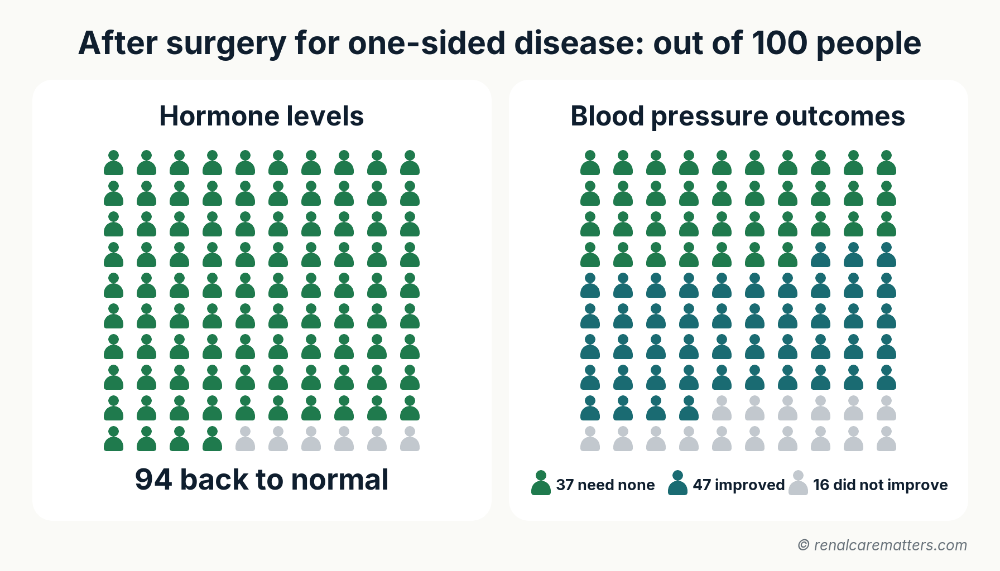
After surgery for one-sided disease, out of 100 people: 94 have normal hormone levels; 37 need no blood pressure medicine, 47 improve, and 16 do not improve.Pagkatapos ng operasyon sa isang-panig na sakit, sa 100 tao: 94 ang normal na ang hormone; 37 ang hindi na kailangan ng gamot sa presyon, 47 ang gumaganda, at 16 ang hindi gumaganda.Human sa operasyon sa usa-ka-kilid nga sakit, sa 100 ka tawo: 94 ang normal na ang hormone; 37 ang dili na kinahanglan og tambal sa presyon, 47 ang miuswag, ug 16 ang wala miuswag.Kaibat ning operasyun king metung-sulip a sakit, king 100 a tau: 94 ing normal ne ing hormone; 37 ing ali na kailangan gamut king presyun, 47 ing mimayap, at 16 ing e mimayap.
Medicine works well for most people. Spironolactone is usually the first choice because it is effective, inexpensive, and widely available. Eplerenone causes fewer breast and menstrual side effects but is weaker per milligram and may be harder to find. The dose is raised step by step. One sign that it is working is that renin, which was pushed down, starts to rise again.Mabisa ang gamot sa karamihan. Karaniwang unang pinipili ang spironolactone dahil mabisa, mura, at madaling makuha. Mas kaunti ang side effect sa dibdib at regla ng eplerenone pero mas mahina bawat milligram at maaaring mas mahirap hanapin. Unti-unting itinataas ang dosis. Isang senyales na gumagana ito ay ang muling pagtaas ng renin na dati ay naitulak pababa.Epektibo ang tambal sa kadaghanan. Kasagaran unang gipili ang spironolactone kay epektibo, barato, ug daling makuha. Mas gamay ang side effect sa dughan ug regla sa eplerenone apan mas huyang matag milligram ug mahimong mas lisod pangitaon. Hinay-hinay nga pataason ang dosis. Usa ka timailhan nga molihok kini mao ang pagsaka pag-usab sa renin nga kaniadto naduso paubos.Mabisa ya ing gamut king kayanakung tau. Karaniwan mumuna dang pipiliin ing spironolactone uling mabisa, mura, at malagwang makwa. Mas kakaunti ing side effect king susu at regla ning eplerenone pero mas mayupa balang milligram at malyaring mas masakit anapan. Dadalan-dalan dang itatas ing dosis. Metung a tanda a gagana ya ing pamitaas pasibayu ning renin a dati metulak pababa.
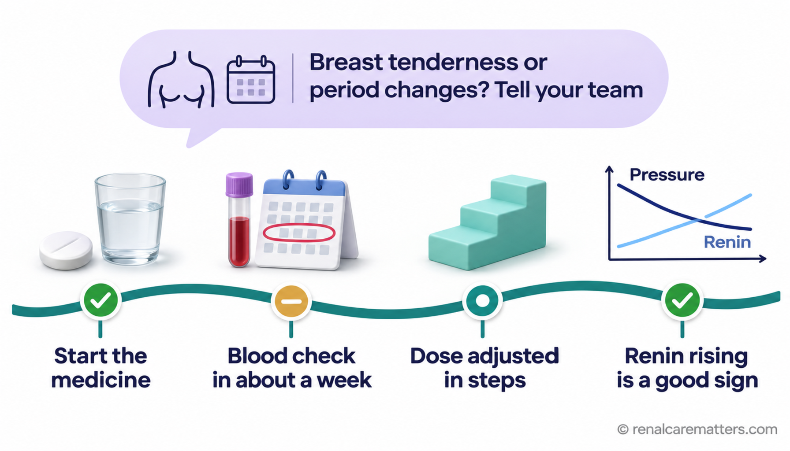
The medicine journey: start, a blood check in about a week, dose changes in steps, and renin rising as pressure falls. Tell your team about breast tenderness or period changes.Ang paglalakbay sa gamot: magsimula, blood check sa mga isang linggo, unti-unting pagbabago ng dosis, at pagtaas ng renin habang bumababa ang presyon. Sabihin sa team kung may pananakit ng dibdib o pagbabago sa regla.Ang panaw sa tambal: magsugod, blood check sa mga usa ka semana, hinay-hinay nga pag-usab sa dosis, ug pagsaka sa renin samtang mous-os ang presyon. Isulti sa team kung adunay sakit sa dughan o kausaban sa regla.Ing paglakbe king gamut: mumpisa, blood check king intang metung a domingu, dadalan-dalan a pamagbayu dosis, at pamitaas ning renin kabang mababa ing presyun. Sabyan me ing team nung atin sakit king susu o pamagbayu king regla.
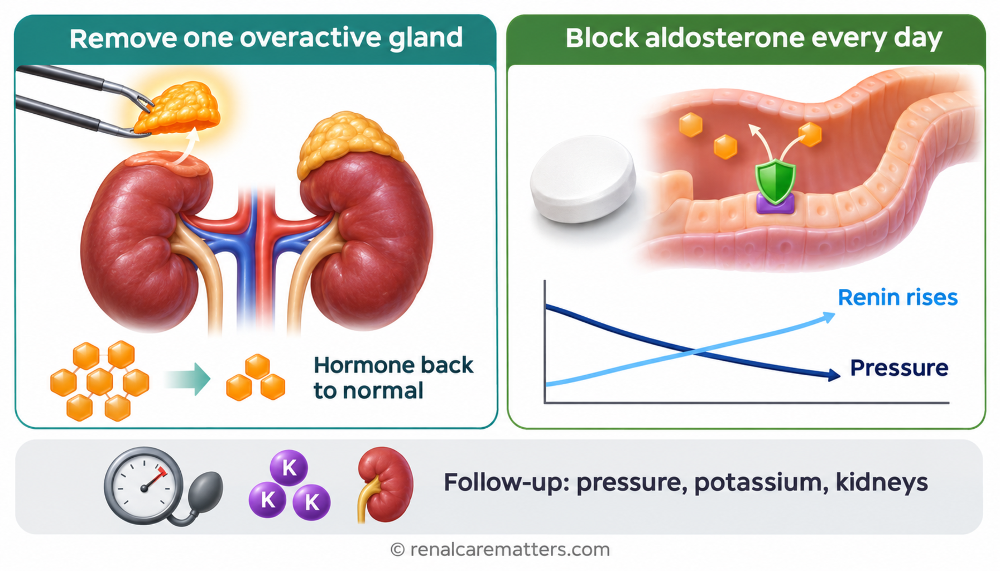
Two ways to treat the cause: remove a single overactive gland, or block aldosterone where it acts. Both need follow-up of blood pressure, potassium, and kidney function.Dalawang paraan para gamutin ang sanhi: alisin ang iisang sobrang aktibong gland, o harangan ang aldosterone kung saan ito kumikilos. Pareho silang nangangailangan ng pagsubaybay sa presyon, potassium, at bato.Duha ka paagi sa pagtambal sa hinungdan: kuhaon ang usa ka sobra ka aktibo nga gland, o babagan ang aldosterone diin kini molihok. Pareho silang nagkinahanglan og pagsubay sa presyon, potassium, ug bato.Adwang paralan ban gamutan ing sanhi: alisan ing metung a sobrang aktibung gland, o pigilan ing aldosterone nu ya kikilus. Pareu lang mangailangan pamantabe king presyun, potassium, at batu.
Why your kidney numbers may changeBakit maaaring magbago ang numero ng batoNganong mahimong mausab ang numero sa batoNung bakit malyaring mibayu ing numeru ning batu
Excess aldosterone makes the kidney filters work harder than normal, which can make kidney function look better than it really is. Once treatment controls aldosterone, the filters relax and the eGFR (estimated glomerular filtration rate) may drop a little in the first weeks. This often reflects relief of overwork rather than new damage. A large or continuing rise in creatinine is still checked carefully.Pinapagtrabaho nang higit sa normal ng sobrang aldosterone ang mga pansala ng bato, kaya maaaring mukhang mas maayos ang bato kaysa sa totoo. Kapag nakontrol na ng gamutan ang aldosterone, nagpapahinga ang mga pansala at maaaring bahagyang bumaba ang eGFR (estimated glomerular filtration rate) sa unang mga linggo. Kadalasang pagkawala ito ng sobrang pagod at hindi bagong pinsala. Maingat pa ring sinusuri ang malaki o patuloy na pagtaas ng creatinine.Pabuhaton sa sobrang aldosterone ang mga pansala sa bato labaw sa normal, mao nga mahimong mura og mas maayo ang bato kaysa sa tinuod. Kung makontrol na sa pagtambal ang aldosterone, mopahulay ang mga pansala ug mahimong gamay nga mous-os ang eGFR (estimated glomerular filtration rate) sa unang mga semana. Kasagaran kini pagkawala sa sobra nga kakapoy, dili bag-ong kadaot. Mabinantayon gihapon nga susihon ang dako o padayon nga pagsaka sa creatinine.Pagobran ning sobrang aldosterone deng pansala ning batu ibat king normal, kaya malyaring mumuran mas mayap ing batu kesa king tutu. Nung kontrolado ne ning pamanulu ing aldosterone, mipainawa la reng pansala at malyaring tikdo yang mababa ing eGFR (estimated glomerular filtration rate) kareng mumunang domingu. Kadalasan pamakawala ya iti ning sobrang kapagal, ali bayung pamakasira. Maingat da pa ring suyuran ing maragul o patuloy a pamitaas ning creatinine.
Research watch: baxdrostatBantayan sa pananaliksik: baxdrostatBantayan sa panukiduki: baxdrostatPamantabe king pananaliksik: baxdrostat
Baxdrostat blocks the enzyme that makes aldosterone. In May 2026 the U.S. Food and Drug Administration (FDA) approved it as an add-on medicine for hard-to-control high blood pressure, not specifically for primary aldosteronism. In a small follow-up of 14 people with primary aldosteronism who took it for more than a year, blood pressure and hormone levels stayed improved in many of them for up to 2 years after stopping. That study was tiny and had no comparison group, so it suggests but does not prove a lasting effect. A large trial in primary aldosteronism is under way. Ask your doctor about availability in the Philippines before counting on it.Hinaharangan ng baxdrostat ang enzyme na gumagawa ng aldosterone. Noong Mayo 2026, inaprubahan ito ng U.S. Food and Drug Administration (FDA) bilang dagdag na gamot para sa mahirap kontrolin na altapresyon, hindi partikular para sa primary aldosteronism. Sa isang maliit na follow-up ng 14 na taong may primary aldosteronism na uminom nito nang mahigit isang taon, nanatiling maayos ang presyon at hormone ng marami sa kanila hanggang 2 taon matapos huminto. Napakaliit ng pag-aaral at walang grupong pinaghambingan, kaya nagmumungkahi lang ito at hindi nagpapatunay ng pangmatagalang epekto. May malaking trial sa primary aldosteronism na kasalukuyang isinasagawa. Tanungin ang doktor kung mayroon nito sa Pilipinas bago umasa rito.Babagan sa baxdrostat ang enzyme nga mohimo og aldosterone. Niadtong Mayo 2026, giaprobahan kini sa U.S. Food and Drug Administration (FDA) isip dugang tambal para sa lisod kontrolon nga altapresyon, dili partikular para sa primary aldosteronism. Sa usa ka gamay nga follow-up sa 14 ka tawo nga adunay primary aldosteronism nga miinom niini sulod sa kapin sa usa ka tuig, nagpabilin nga maayo ang presyon ug hormone sa kadaghanan kanila hangtod 2 ka tuig human mohunong. Gamay kaayo ang pagtuon ug walay grupo nga gitandi, mao nga nagsugyot lang kini ug dili nagpamatuod sa malungtarong epekto. Adunay dako nga trial sa primary aldosteronism nga gihimo karon. Pangutan-a ang doktor kung aduna niini sa Pilipinas sa dili pa mosalig niini.Pigilan ning baxdrostat ing enzyme a gagawa aldosterone. Kanitang Mayu 2026, inaprubaan ne ning U.S. Food and Drug Administration (FDA) bilang dagdag a gamut para king masakit kontrolan a altapresyun, ali partikular para king primary aldosteronism. King metung a malating follow-up dareng 14 a tau a atin primary aldosteronism a minum kaniti mayigit metung a banwa, manatiling mayap ing presyun at hormone ning dakal karela anggang 2 banwa kaibat dang mitigil. Kaliitan ing pamanigaral at alang grupung pikumpara, kaya imungkai yamu iti at ali na patunayan ing malawig a epektu. Atin maragul a trial king primary aldosteronism a gagawan ngeni. Kutnan me ing doktor nung atin kaniti king Pilipinas bayu ka umasa.
Living well with primary aldosteronismPamumuhay nang maayos na may primary aldosteronismMaayong pagkinabuhi uban ang primary aldosteronismMayap a pamibie kayabe ing primary aldosteronism
DoGawinBuhataGawan
- Keep a home blood pressure log and bring it to every visit.Magtala ng presyon sa bahay at dalhin sa bawat pagpapatingin.Pagtala sa presyon sa balay ug dad-a sa matag pagpatan-aw.Magtala presyun king bale at dalan king balang pamagpalawe.
- Keep every potassium and creatinine check, especially in the first weeks after starting or changing a dose.Huwag lumiban sa pagsusuri ng potassium at creatinine, lalo na sa unang mga linggo matapos magsimula o magbago ng dosis.Ayaw paglangan sa pagsusi sa potassium ug creatinine, labi na sa unang mga semana human magsugod o mausab ang dosis.Eme lilibanan ing pamanuyu king potassium at creatinine, lalu na kareng mumunang domingu kaibat mumpisa o mibayu ing dosis.
- Go easy on salt: patis, toyo, bagoong, instant noodles, and canned or processed meats. Less salt helps your treatment work and protects the heart.Bawasan ang asin: patis, toyo, bagoong, instant noodles, at de-lata o processed na karne. Nakatutulong ang mas kaunting asin sa bisa ng gamutan at sa puso.Pakunhori ang asin: patis, toyo, bagoong, instant noodles, ug de-lata o processed nga karne. Makatabang ang mas gamay nga asin sa pagtambal ug sa kasingkasing.Bawasan ing asin: patis, toyo, bagoong, instant noodles, at de-lata o processed a karne. Makasaup ing mas kakaunting asin king pamanulu at king pusu.
- Stay active most days and take your medicine at the same time each day.Manatiling aktibo halos araw-araw at inumin ang gamot sa parehong oras araw-araw.Magpabiling aktibo halos adlaw-adlaw ug imna ang tambal sa samang oras matag adlaw.Manatiling aktibu malapit aldo-aldo at inuman ing gamut king pareung oras balang aldo.
Avoid unless your doctor approvesIwasan maliban kung pinayagan ng doktorLikayi gawas kung gitugotan sa doktorIwasan nung e pinabaye ning doktor
- Potassium salt substitutes ("lite" salt) and potassium tablets while on spironolactone or after adrenal surgery.Potassium na pamalit sa asin ("lite" salt) at potassium tablet habang nasa spironolactone o pagkatapos ng operasyon sa adrenal.Potassium nga puli sa asin ("lite" salt) ug potassium tablet samtang naa sa spironolactone o human sa operasyon sa adrenal.Potassium a pamalit king asin ("lite" salt) at potassium tablet kabang atyu king spironolactone o kaibat ning operasyun king adrenal.
- Pain relievers such as ibuprofen, naproxen, or mefenamic acid; they raise blood pressure and potassium risk.Pain reliever gaya ng ibuprofen, naproxen, o mefenamic acid; pinapataas nila ang presyon at panganib sa potassium.Pain reliever sama sa ibuprofen, naproxen, o mefenamic acid; mopataas sila sa presyon ug peligro sa potassium.Pain reliever anti ing ibuprofen, naproxen, o mefenamic acid; pamatas da ing presyun at panganib king potassium.
- Large amounts of licorice (some herbal teas and candies). It acts like aldosterone and confuses the picture.Maraming licorice (ilang herbal tea at kendi). Kumikilos ito na parang aldosterone at nakalilito sa resulta.Daghang licorice (pipila ka herbal tea ug kendi). Molihok kini sama sa aldosterone ug makalibog sa resulta.Dakal a licorice (pilan a herbal tea at kendi). Kikilus yang anti aldosterone at makalitu king resulta.
- Herbal "detox" products and supplements you have not discussed with your doctor.Herbal na "detox" at supplement na hindi mo pa napag-uusapan ng iyong doktor.Herbal nga "detox" ug supplement nga wala pa nimo mahisgoti sa imong doktor.Herbal a "detox" at supplement a e mu pa pisalitan kayabe ing doktor mu.
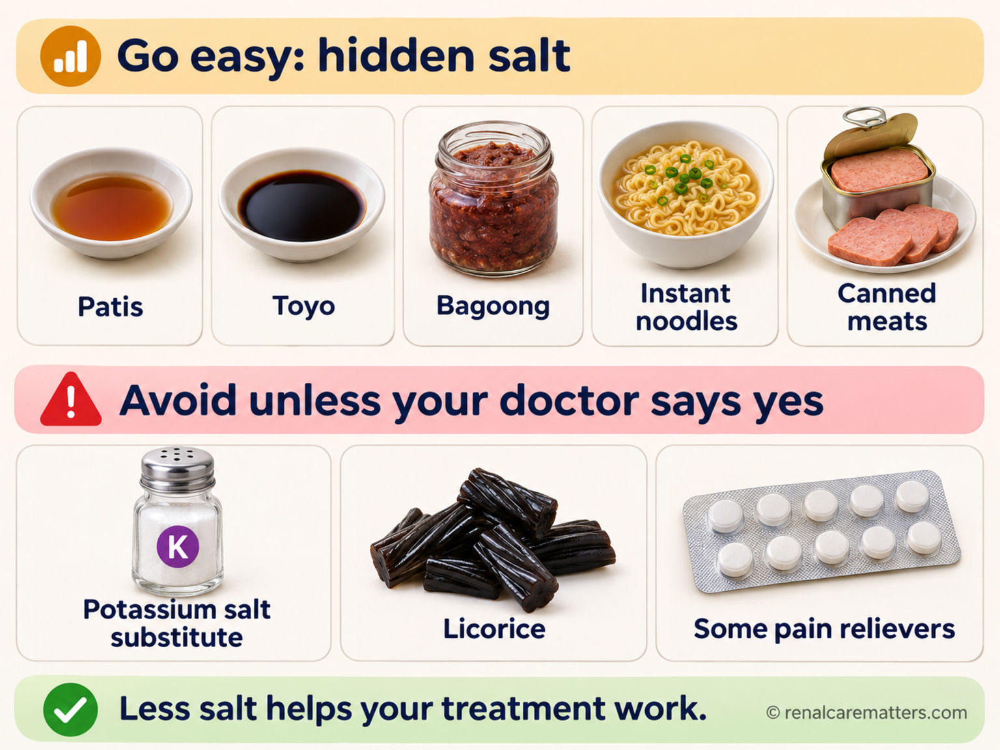
Go easy on hidden salt in patis, toyo, bagoong, instant noodles, and canned meats; avoid potassium salt substitutes, licorice, and some pain relievers unless your doctor says yes.Bawasan ang nakatagong asin sa patis, toyo, bagoong, instant noodles, at de-latang karne; iwasan ang potassium na pamalit sa asin, licorice, at ilang pain reliever maliban kung pumayag ang doktor.Pakunhori ang natago nga asin sa patis, toyo, bagoong, instant noodles, ug de-lata nga karne; likayi ang potassium nga puli sa asin, licorice, ug pipila ka pain reliever gawas kung motugot ang doktor.Bawasan ing makatagung asin king patis, toyo, bagoong, instant noodles, at de-latang karne; iwasan ing potassium a pamalit king asin, licorice, at pilan a pain reliever nung e pumayag ing doktor.
Getting tested and treated in the PhilippinesPagpapasuri at pagpapagamot sa PilipinasPagpasusi ug pagpatambal sa PilipinasPamapasuri at pamapagamut king Pilipinas
- Ask the laboratory whether it reports renin as PRA or DRC, and which method it uses for aldosterone (immunoassay or liquid chromatography-tandem mass spectrometry, LC-MS/MS). Write it on your result.Tanungin ang laboratoryo kung iniuulat nito ang renin bilang PRA o DRC, at anong paraan ang gamit sa aldosterone (immunoassay o LC-MS/MS). Isulat ito sa resulta mo.Pangutan-a ang laboratoryo kung gi-report niini ang renin isip PRA o DRC, ug unsang pamaagi ang gamit sa aldosterone (immunoassay o LC-MS/MS). Isulat kini sa imong resulta.Kutnan me ing laboratoryu nung ireport na ing renin bilang PRA o DRC, at nanung paralan ing gamit na king aldosterone (immunoassay o LC-MS/MS). Isulat me king resulta mu.
- Ask whether aldosterone, renin, and potassium can be drawn at the same visit, and how the sample is handled. Renin samples are usually kept at room temperature, not on ice.Itanong kung makukuha ang aldosterone, renin, at potassium sa parehong pagbisita, at paano hinahawakan ang sample. Karaniwang nasa room temperature ang renin sample, hindi sa yelo.Pangutan-a kung makuha ang aldosterone, renin, ug potassium sa samang pagbisita, ug giunsa pagdumala ang sample. Kasagaran naa sa room temperature ang renin sample, dili sa yelo.Kutnan mu nung makwa ing aldosterone, renin, at potassium king pareung pamibisita, at makananu dang aawakan ing sample. Karaniwan atyu king room temperature ing renin sample, ali king yelu.
- Ask about the cost before the test; prices vary between laboratories.Itanong ang halaga bago ang test; nag-iiba ang presyo sa bawat laboratoryo.Pangutan-a ang bayad sa dili pa ang test; lahi-lahi ang presyo sa matag laboratoryo.Kutnan mu ing alaga bayu ing test; miyayaliwa ing presyu king balang laboratoryu.
- Ask for referral to an endocrinologist or nephrologist experienced with primary aldosteronism and, if you are considering surgery, to a center that performs adrenal vein sampling regularly.Humingi ng referral sa endocrinologist o nephrologist na may karanasan sa primary aldosteronism at, kung iniisip mo ang operasyon, sa sentrong regular na gumagawa ng adrenal vein sampling.Pangayo og referral sa endocrinologist o nephrologist nga adunay kasinatian sa primary aldosteronism ug, kung gihunahuna nimo ang operasyon, sa sentro nga regular nga mohimo og adrenal vein sampling.Mamakisabi referral king endocrinologist o nephrologist a atin karanasan king primary aldosteronism at, nung isipan mu ing operasyun, king sentrung regular a gagawa adrenal vein sampling.
- Spironolactone is widely available in Philippine pharmacies. Ask your doctor and pharmacist about other options and their cost.Madaling mabili ang spironolactone sa mga botika sa Pilipinas. Tanungin ang doktor at pharmacist tungkol sa ibang opsyon at halaga.Daling mapalit ang spironolactone sa mga botika sa Pilipinas. Pangutan-a ang doktor ug pharmacist bahin sa ubang opsyon ug presyo.Malagwang asaliwan ing spironolactone kareng botika king Pilipinas. Kutnan me ing doktor at pharmacist tungkul king aliwang opsyun at alaga.
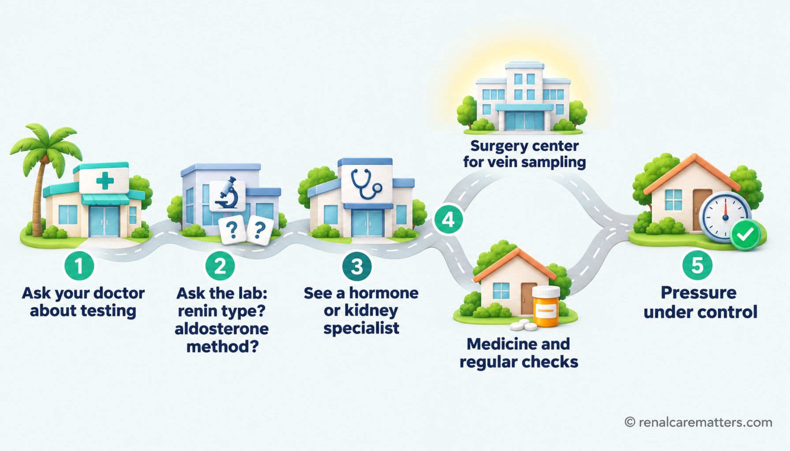
Your route: ask your doctor, ask the lab two questions, see a specialist, then surgery or medicine, with both paths aiming for controlled blood pressure.Ang iyong landas: magtanong sa doktor, magtanong ng dalawang bagay sa lab, magpatingin sa espesyalista, pagkatapos operasyon o gamot, at parehong naglalayong makontrol ang presyon.Ang imong dalan: pangutana sa doktor, pangutana og duha ka butang sa lab, magpatan-aw sa espesyalista, unya operasyon o tambal, ug pareho nga nagtumong nga makontrol ang presyon.Ing dalan mu: mangutang king doktor, mangutang adwang bage king lab, magpalawe king espesyalista, kaibat operasyun o gamut, at pareu lang mangatula king kontroladung presyun.
Related: Difficult-to-control hypertension · Blood pressure targets in CKD · Potassium and kidney diseaseKaugnay: Mahirap kontrolin na altapresyon · Target na presyon sa CKD · Potassium at sakit sa batoMay kalabotan: Lisod kontrolon nga altapresyon · Target nga presyon sa CKD · Potassium ug sakit sa batoKaugnay: Masakit kontrolan a altapresyun · Target a presyun king CKD · Potassium at sakit king batu
Questions to ask your teamMga tanong para sa iyong teamMga pangutana para sa imong teamDeng kutang para king team mu
Tick the questions that matter to you. A short list appears below that you can print or copy into a message. Nothing you tick is saved or sent anywhere.Lagyan ng tsek ang mga tanong na mahalaga sa iyo. Lalabas sa ibaba ang maikling listahan na maaari mong i-print o kopyahin. Walang naiimbak o naipapadala sa anumang tsinek mo.Tsekan ang mga pangutana nga importante kanimo. Mogawas sa ubos ang mubo nga listahan nga mahimo nimong i-print o kopyahon. Walay matipig o mapadala sa bisan unsang imong gitsekan.Tsekan me ing deng kutang a mayalaga keka. Lumwal king lalam ing malati a listahan a malyari mung i-print o kopyan. Alang maimbak o mipadala king anumang tinsek mu.
My questions about aldosterone and blood pressureMga tanong ko tungkol sa aldosterone at presyonAkong mga pangutana bahin sa aldosterone ug presyonDeng kutang ku tungkul king aldosterone at presyun
Frequently asked questionsMga madalas itanongKanunay nga pangutanaDeng kalimitang kutang
My potassium is normal. Can I still have primary aldosteronism?Normal ang potassium ko. Maaari pa rin ba akong magkaroon ng primary aldosteronism?Normal ang akong potassium. Mahimo ba gihapon ko adunay primary aldosteronism?Normal ing potassium ku. Malyari ku pa rin bang atin primary aldosteronism?
Do I have to stop my blood pressure medicines for the test?Kailangan ko bang ihinto ang gamot sa presyon para sa test?Kinahanglan ba nakong hunongon ang tambal sa presyon para sa test?Kailangan ku bang itian ing gamut king presyun para king test?
Is a high ratio the same as a diagnosis?Pareho ba ng diagnosis ang mataas na ratio?Pareho ba sa diagnosis ang taas nga ratio?Pareu ya ba ning diagnosis ing matas a ratio?
Is surgery a cure?Lunas ba ang operasyon?Tambal ba gyud ang operasyon?Lunas ya ba ing operasyun?
Will I need spironolactone for life?Kailangan ko ba ng spironolactone habambuhay?Kinahanglan ba nako ang spironolactone hangtod sa kinabuhi?Kailangan ku ba ing spironolactone anggang king bie?
I have CKD or I am on dialysis. Can I still be tested?May CKD ako o nagda-dialysis. Maaari pa rin ba akong suriin?Adunay CKD ko o nag-dialysis. Mahimo ba gihapon ko susihon?Atin kung CKD o mag-dialysis ku. Malyari ku pa rin bang suyuran?
Why primary aldosteronism deserves a test
Primary aldosteronism (PA) is renin-independent aldosterone production by one or both adrenal glands. The 2025 Endocrine Society guideline, built with Grading of Recommendations, Assessment, Development and Evaluation (GRADE) methods around ten questions, estimates a prevalence of 5% to 14% among people with hypertension in primary care and up to 30% in referral centers (Adler et al., 2025). Prevalence depends on how hard one looks. When Brown and colleagues gave an oral sodium suppression test to every participant regardless of screening values, biochemically overt PA was present in 11.3% of normotensive adults, 15.7% with stage 1, 21.6% with stage 2, and 22.0% with resistant hypertension, and the aldosterone-to-renin ratio (ARR) had poor sensitivity for these cases (Brown et al., 2020). Renin-independent aldosterone production is therefore better understood as a continuum than a rare categorical disease. In a Chinese community cohort of newly diagnosed hypertension, at least 4.0% had confirmed PA (Xu et al., 2020).
The harm is out of proportion to blood pressure (BP). In a meta-analysis of 31 observational studies (3,838 PA versus 9,284 essential hypertension), PA carried odds ratios of 2.58 for stroke, 1.77 for coronary artery disease, 3.52 for atrial fibrillation (AF), 2.05 for heart failure, and 2.29 for left ventricular hypertrophy (Monticone et al., 2018). Observational These are associations from heterogeneous cohorts, but the consistency across subtypes and the mineralocorticoid receptor (MR) biology make a causal contribution plausible.
Detection remains rare. Among 269,010 U.S. veterans with apparent treatment-resistant hypertension, 1.6% were tested; testing was associated with a fourfold higher likelihood of starting a mineralocorticoid receptor antagonist (MRA) (hazard ratio 4.10) and with better longitudinal BP control (Cohen et al., 2021). In Ontario, only 3.9% of adults with hypertension and potassium below 3.0 mEq/L were screened (Hundemer et al., 2022). Nephrology involvement roughly doubled the likelihood of testing in both cohorts, which makes this a nephrology problem as much as an endocrine one.
Where the guidelines agree and differ
| Guideline | Who to screen | Grade (source vocabulary) | Practical stance |
|---|---|---|---|
| Endocrine Society 2025 | All adults with hypertension | Conditional recommendation, low certainty (GRADE) | Screen on current medicines if needed; prioritize higher pretest probability when capacity is limited |
| American Heart Association/American College of Cardiology (AHA/ACC) 2025 | All adults with resistant hypertension, regardless of potassium | Class of Recommendation (COR) 1, Level of Evidence (LOE) B-NR | Continue most antihypertensives except MRAs before screening |
| European Society of Cardiology (ESC) 2024 | All adults with confirmed hypertension | Class IIa, Level B | Renin and aldosterone measurement should be considered |
AHA/ACC and ESC grades are quoted in their own systems and not converted. All three converge on one practical point: a first screen should not be delayed by medication withdrawal.
Pathophysiology across organ systems
Normal control. Established Aldosterone synthase (encoded by CYP11B2) in the zona glomerulosa is driven chiefly by angiotensin II and extracellular potassium. In principal cells of the connecting tubule and collecting duct, aldosterone binds the MR, increases apical epithelial sodium channel (ENaC) activity and basolateral sodium-potassium ATPase, and the resulting lumen-negative potential drives potassium secretion through renal outer medullary potassium (ROMK) channels and hydrogen-ion secretion from intercalated cells. Sodium retention expands volume and suppresses renin, which in health switches aldosterone back off.
What PA breaks. In an aldosterone-producing adenoma or bilateral hyperplasia, CYP11B2 expression escapes angiotensin II control, most often through somatic variants that depolarize glomerulosa cells and raise intracellular calcium. The feedback loop is severed: volume expansion suppresses renin, yet aldosterone stays inappropriately high. Hypokalemia and metabolic alkalosis follow only when distal sodium delivery and potassium wasting are sufficient, which explains why most patients are normokalemic.
Beyond the kidney. Inference MRs in cardiomyocytes, fibroblasts, vascular smooth muscle, endothelium, and macrophages translate excess aldosterone, especially in the setting of high sodium intake, into oxidative stress, inflammation, and fibrosis. That is the most coherent explanation for the AF, left ventricular hypertrophy, and stroke excess at matched BP. The same biology explains why MRA dose matters: in a registry cohort, MRA-treated PA had more cardiovascular events than essential hypertension (adjusted hazard ratio 1.91), but the excess was confined to patients whose plasma renin activity (PRA) stayed below 1 ng/mL/h on treatment (adjusted hazard ratio 2.83), with no significant excess when renin rose to 1 or higher (Hundemer et al., 2018a). Observational
The kidney paradox. Aldosterone excess raises glomerular pressure and filtration, so untreated PA can mask true nephron loss while albuminuria rises. When aldosterone is controlled, hyperfiltration resolves and estimated glomerular filtration rate (eGFR) falls. Long term, MRA-treated PA carried a higher risk of incident chronic kidney disease (CKD) than matched essential hypertension (adjusted hazard ratio 1.63; annual eGFR decline 1.6 versus 0.9 mL/min/1.73 m²), whereas adrenalectomy-treated patients showed no excess (Hundemer et al., 2018b). Observational Confounding by disease severity and MRA under-dosing cannot be excluded.
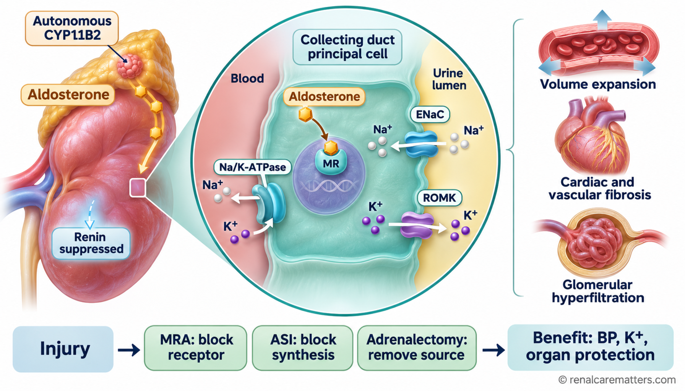
From adrenal autonomy to tubular sodium retention and potassium loss, then to cardiac, vascular, and glomerular injury, with the three treatment levers: block the receptor with a mineralocorticoid receptor antagonist, block synthesis with an aldosterone synthase inhibitor (ASI), or remove the source.
- CYP11B2
- Aldosterone synthase gene
- MR
- Mineralocorticoid receptor
- ENaC
- Epithelial sodium channel
- ROMK
- Renal outer medullary potassium channel
- MRA
- Mineralocorticoid receptor antagonist
- ASI
- Aldosterone synthase inhibitor
- BP
- Blood pressure
Screen and prepare the sample
The Endocrine Society suggests screening adults with hypertension using paired aldosterone and renin; where capacity is limited, prioritize true resistant hypertension and hypertension with spontaneous or diuretic-associated hypokalemia, an adrenal incidentaloma, obstructive sleep apnea (OSA), early-onset hypertension or stroke, or a family history of PA (Adler et al., 2025). A normal potassium is compatible with PA. Measure potassium on the same draw, because hypokalemia suppresses aldosterone and can produce a false-negative screen; repeat a negative result after supervised correction if suspicion persists.
Draw in the morning after the patient has been ambulant, then seated, following the local laboratory protocol. Avoid deliberate sodium restriction in the days before when clinically appropriate. In CKD, heart failure, or volume overload, coordinate with the existing sodium and fluid prescription. Record posture, sodium and volume context, potassium, eGFR trend, recent illness or acute kidney injury (AKI), and all current drugs. A first draw on usual treatment is reasonable when changing medications would endanger BP, volume, or potassium control. Transport renin samples at room temperature unless the laboratory specifies otherwise, because chilling can activate prorenin and falsely raise renin.
Drugs that move the result
| Drug class | Effect on renin / aldosterone | Net effect on ARR | What to do with a discordant result |
|---|---|---|---|
| Beta blockers, clonidine, methyldopa | Lower renin; lower aldosterone | Raise ARR (false positive) | If aldosterone is only modestly elevated, repeat after a supervised 2-week withdrawal if safe |
| Nonsteroidal anti-inflammatory drugs (NSAIDs) | Lower renin | Raise ARR | Stop if feasible; interpret with caution |
| Combined estrogen-progestin pills or hormone therapy | Lower direct renin concentration (DRC); raise aldosterone | Raise ARR when DRC is used | Prefer PRA, or interpret DRC-based ratios cautiously |
| Angiotensin-converting enzyme (ACE) inhibitors, angiotensin receptor blockers (ARBs) | Raise renin; lower aldosterone | Lower ARR (false negative) | Suppressed renin despite these drugs strongly suggests PA; repeat after 2 weeks off only if necessary and safe |
| Sodium-glucose cotransporter 2 (SGLT2) inhibitors | Raise renin | Lower ARR | Common in CKD; note on the request; a positive screen on therapy remains meaningful |
| Diuretics, MRAs, amiloride, triamterene | Raise renin; raise aldosterone | Lower ARR | If a repeat is needed, allow 4 weeks off MRAs and ENaC inhibitors |
| Drospirenone | Raises renin and aldosterone | Variable | Record and interpret in context |
Withdrawal strategies. The guideline describes a minimal strategy (stop MRAs and ENaC inhibitors for 4 weeks; stop beta blockers and central alpha-2 agonists for 2 weeks) and a full strategy that also stops other diuretics (4 weeks) and ACE inhibitors, ARBs, dihydropyridine calcium-channel blockers, and SGLT2 inhibitors (2 weeks). Bridging options include hydralazine (ideally with slow-release verapamil to blunt reflex tachycardia), alpha-1 blockers, nondihydropyridine calcium-channel blockers, and moxonidine (Adler et al., 2025). Match the choice to BP, heart rate, comorbidity, and volume. In CKD with heart failure, stopping SGLT2 inhibitors, MRAs, or loop diuretics carries real risk, so the threshold for "test on therapy and interpret" should be lower.
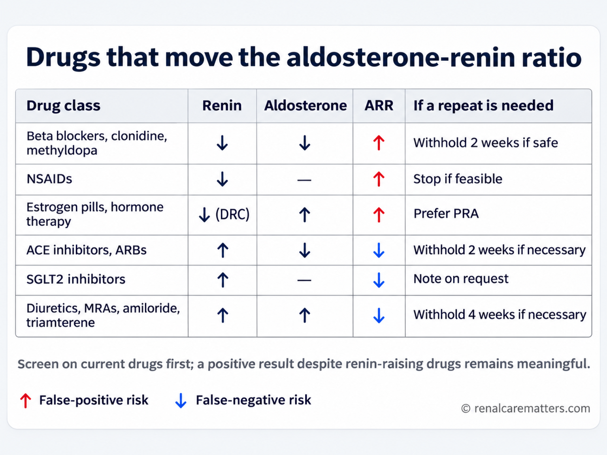
Interfering medicines at a glance: which drugs push the ratio up (false-positive risk) or down (false-negative risk), and how long each needs to be withheld if a repeat is necessary.
- ARR
- Aldosterone-to-renin ratio
- ACE
- Angiotensin-converting enzyme
- ARB
- Angiotensin receptor blocker
- SGLT2
- Sodium-glucose cotransporter 2
- MRA
- Mineralocorticoid receptor antagonist
- ENaC
- Epithelial sodium channel
- NSAID
- Nonsteroidal anti-inflammatory drug
- PRA
- Plasma renin activity
- DRC
- Direct renin concentration
Read aldosterone, renin, and ARR together, especially in CKD
| Measure | 2025 Endocrine Society screening values |
|---|---|
| Renin | Suppressed: PRA ≤1 ng/mL/h, or DRC ≤8.2 mU/L |
| Aldosterone | ≥10 ng/dL (277 pmol/L) by immunoassay, or ≥7.5 ng/dL (208 pmol/L) by liquid chromatography-tandem mass spectrometry (LC-MS/MS) |
| ARR | Immunoassay aldosterone: >20 (ng/dL ÷ ng/mL/h PRA) or >70 (pmol/L ÷ mU/L DRC). With LC-MS/MS aldosterone the indicative ratio is about 25% lower |
| Overt pattern | PRA <0.2 ng/mL/h or DRC <2 mU/L, with aldosterone >20 ng/dL (554 pmol/L) by immunoassay or >15 ng/dL (416 pmol/L) by LC-MS/MS |
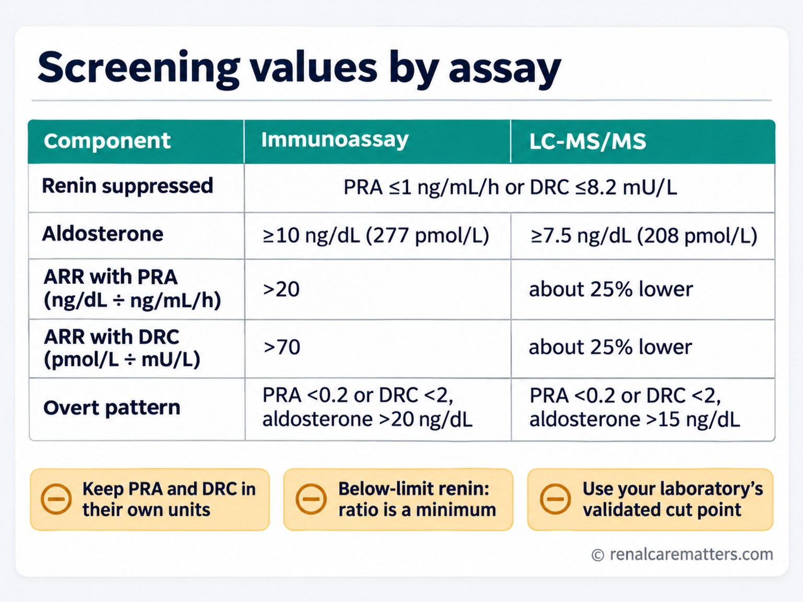
Bedside card of the 2025 Endocrine Society screening values, separated by aldosterone assay and renin measure.
- ARR
- Aldosterone-to-renin ratio
- PRA
- Plasma renin activity
- DRC
- Direct renin concentration
- LC-MS/MS
- Liquid chromatography-tandem mass spectrometry
A typical positive screen combines suppressed renin, inappropriately high aldosterone, and an elevated ratio. PRA and DRC measure different properties of renin; keep each in its reported units with its matching cutoff, and do not convert between them for threshold purposes. A renin result below the quantification limit should keep its qualifier ("<0.2"), and the ratio should be reported as a minimum. Laboratories may validate their own cut points; use them when they exist (Adler et al., 2025).
CKD. Renin falls in proportion to nephron loss, except in renal artery stenosis where ischemia raises it, and aldosterone can be elevated in CKD, both of which inflate false positives (Adler et al., 2025). Diuretics, SGLT2 inhibitors, hypokalemia, and volume shifts move results in either direction. Resolve discordance with all three components, pretest probability, and a repeat sample under stable conditions; keep standard thresholds labeled as general screening guidance. In dialysis, document modality, timing relative to treatment, residual urine output, and volume status, and involve a specialist in interpretation.
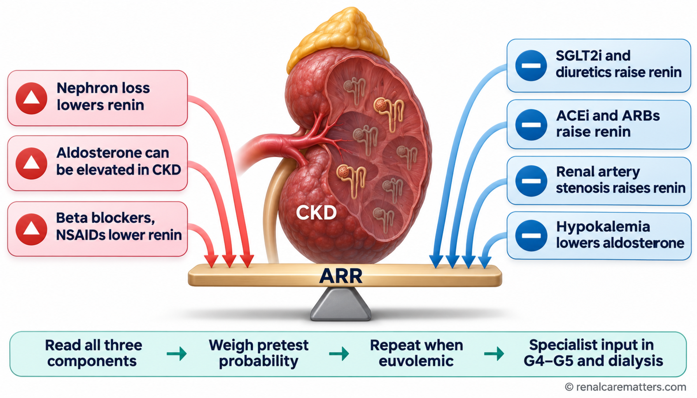
Forces that bend the ratio in CKD toward false positive or false negative, and how to resolve a discordant screen.
- ARR
- Aldosterone-to-renin ratio
- CKD
- Chronic kidney disease
- NSAID
- Nonsteroidal anti-inflammatory drug
- SGLT2i
- Sodium-glucose cotransporter 2 inhibitor
- ACEi
- Angiotensin-converting enzyme inhibitor
- ARB
- Angiotensin receptor blocker
Teaching cases (immunoassay aldosterone, PRA)
Case 1: aldosterone 6 ng/dL, PRA 0.10 ng/mL/h, ARR 60
A very low denominator drives the ratio; aldosterone is below 10 ng/dL. If the patient has resistant hypertension or was hypokalemic at the draw, review drugs and potassium and repeat under a safe plan. A high ratio alone is not a positive screen.
Case 2: aldosterone 24 ng/dL, PRA 0.40 ng/mL/h, ARR 60
With normal potassium and an appropriate collection, all three components support a positive screen. Discuss treatment intent and specialist evaluation. Because PRA is ≥0.2, this is below the overt threshold that allows bypassing suppression testing, even though aldosterone exceeds 20.
Case 3: aldosterone 9 ng/dL, PRA 2.0 ng/mL/h, ARR 4.5, on an ARB and loop diuretic, potassium 3.1
Two renin-raising drugs and hypokalemia (which lowers aldosterone) all bias toward a false negative in a patient with resistant hypertension. Correct potassium and consider a repeat on a safer bridging regimen before concluding that PA is absent.
Case 4: CKD G4, eGFR 22, on dapagliflozin; aldosterone 14 ng/dL, PRA 0.3 ng/mL/h, ARR 47
The pattern is positive by general thresholds, but low renin from nephron loss and aldosterone elevation in CKD both inflate false positives, while the SGLT2 inhibitor pushes the other way. Interpret with pretest probability, repeat under stable volume, and involve a specialist before committing to suppression testing or contrast-based lateralization.
The denominator problem: identical ratios can reflect a true autonomous aldosterone excess or simply a very low renin. Read all three numbers.
Decide whether suppression testing and lateralization would change care
The 2025 guideline reframes confirmation around the question the patient actually faces: would lateralization and surgery be pursued? (Adler et al., 2025)
- Surgery unsuitable, declined, or low probability of lateralization. Start PA-directed medical therapy without suppression testing, with a kidney and potassium monitoring plan.
- Intermediate probability and the patient wants to explore surgery. Consider specialist-directed suppression testing. Seated saline infusion (2 L over 4 hours) should not be used with uncontrolled BP or high pulmonary edema risk, including heart failure or advanced CKD. Oral sodium loading (4 to 5 g sodium daily for 3 to 4 days with 24-hour urine aldosterone) is unsuitable with volume overload or unreliable urine collections in oliguria. A captopril challenge (50 mg, 2-hour aldosterone) needs an in-person visit and attention to BP, kidney function, and renovascular risk.
- Overt biochemistry in resistant hypertension or hypokalemia. With PRA <0.2 ng/mL/h or DRC <2 mU/L and aldosterone >20 ng/dL by immunoassay or >15 ng/dL by LC-MS/MS, proceed directly to subtype evaluation if surgery is desired.
Lateralization. Adrenal computed tomography (CT) defines anatomy and excludes carcinoma; adrenal vein sampling (AVS) at an experienced center identifies the overproducing side. A CT nodule can be nonfunctional and a normal-appearing gland can be the source. Discuss contrast exposure in CKD and plan pre- and post-procedure creatinine. A narrow exception allows surgery without AVS in a patient younger than 35 years with marked PA, hypokalemia, and a unilateral adenoma larger than 1 cm on CT. Whenever an adrenal adenoma is present, include an overnight 1-mg dexamethasone suppression test (DST), because cortisol cosecretion changes perioperative planning and interpretation of AVS (Adler et al., 2025).
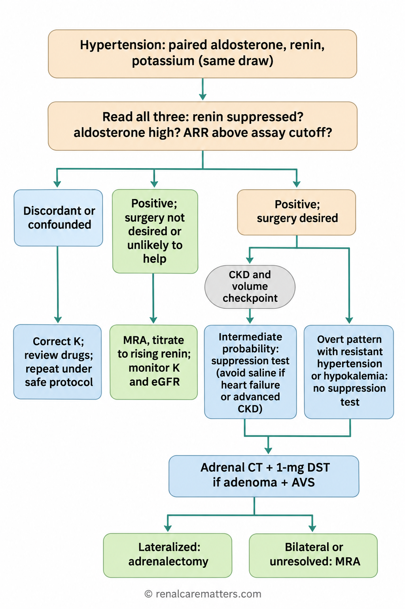
Clinician pathway reflecting the 2025 guideline, with a CKD and volume checkpoint placed before any suppression test or contrast study.
- ARR
- Aldosterone-to-renin ratio
- K
- Potassium
- eGFR
- Estimated glomerular filtration rate
- CKD
- Chronic kidney disease
- CT
- Computed tomography
- AVS
- Adrenal vein sampling
- DST
- Dexamethasone suppression test
- MRA
- Mineralocorticoid receptor antagonist
Surgery or medical therapy
| Decision | Unilateral adrenalectomy | Medical therapy |
|---|---|---|
| Who it fits | Lateralizing PA in an appropriate operative candidate who wants surgery | Bilateral disease, unresolved lateralization, surgery declined or high operative risk |
| What it involves | Usually laparoscopic removal of the overproducing gland | MRAs preferred over ENaC inhibitors; spironolactone preferred for cost and availability (Adler et al., 2025) |
| What success looks like | Primary Aldosteronism Surgical Outcome (PASO) cohort: complete biochemical success 656/699 (94%); complete clinical success 259/705 (37%, center range 17% to 62%); partial clinical success 334/705 (47%) (Williams et al., 2017) | BP control, normokalemia, tolerability, and a rise in renin from the suppressed baseline |
| Follow-up in CKD | Early BP, potassium, and creatinine checks with clinician-directed MRA, potassium, and BP drug changes; reassess at 6 to 12 months and annually. Postoperative hyperkalemia can occur | Potassium and creatinine at baseline and about 1 week after starting or titrating, then at a defined interval; renin, electrolytes, and kidney function 2 to 3 months after each dose change |
Renin-guided MRA titration. The guideline does not specify a renin target; it suggests titrating toward a rise in renin from the pretreatment baseline when BP remains uncontrolled and renin suppressed. Most patients de-suppress renin on spironolactone 50 to 100 mg daily, with changes in 25- to 50-mg steps (Adler et al., 2025). The rationale is the registry signal that residual cardiovascular excess clusters in patients with PRA below 1 ng/mL/h on MRA (Hundemer et al., 2018a). Observational No randomized trial has yet tested renin-targeted titration against BP-targeted titration on hard outcomes. Eplerenone has fewer antiandrogenic effects, but studied doses were roughly one-third as potent as spironolactone, so dose equivalence matters. Advanced CKD and hyperkalemia limit titration.
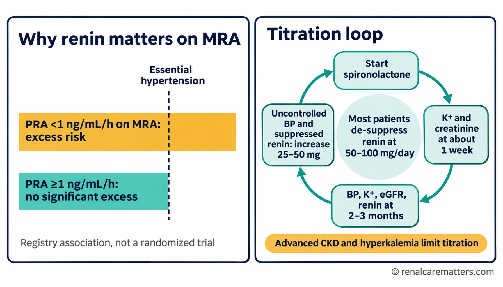
The observational case for renin-guided MRA titration, and the practical titration loop.
- MRA
- Mineralocorticoid receptor antagonist
- PRA
- Plasma renin activity
- K+
- Potassium
- BP
- Blood pressure
- eGFR
- Estimated glomerular filtration rate
- CKD
- Chronic kidney disease
Interpreting the eGFR fall. Effective treatment reverses aldosterone-driven hyperfiltration, so a modest early eGFR decline is expected. Judge it by magnitude and trajectory alongside BP, volume, potassium, and co-medications; investigate a large or progressive creatinine rise for AKI, volume depletion, or renovascular disease, and consider stepping back ACE inhibitor or ARB doses if kidney function declines progressively (Adler et al., 2025).
PA with established CKD. In a multicenter retrospective cohort of 239 patients with PA and CKD (mean eGFR 45) who underwent AVS, BP fell from 149/85 to 131/78 mm Hg and antihypertensive count from 4.0 to 2.4 over 5 years. Adrenalectomy was associated with 1.7 fewer medications than medical management but similar systolic BP, potassium, and kidney and cardiovascular outcomes (Cohen et al., 2023). Observational CKD should not by itself deter evaluation; the design limits causal comparison between strategies.
Two disease-directed strategies with distinct success definitions: biochemical cure after surgery versus renin de-suppression and BP control on MRA.
Aldosterone synthase inhibitors
Mechanism. Established Selective aldosterone synthase inhibitors (ASIs) block CYP11B2 while sparing 11-beta-hydroxylase and cortisol synthesis, removing aldosterone upstream rather than competing at the receptor.
Hypertension trials. Strong In BaxHTN (n = 796; uncontrolled or resistant hypertension on 2 or more drugs including a diuretic; eGFR ≥45), baxdrostat lowered seated systolic BP at 12 weeks by 8.7 mm Hg (1 mg) and 9.8 mm Hg (2 mg) versus placebo; potassium above 6.0 mmol/L occurred in 2.3%, 3.0%, and 0.4% (Flack et al., 2025). In Advance-HTN, lorundrostat reduced 24-hour ambulatory systolic BP by 7.9 and 6.5 mm Hg versus placebo, with potassium above 6.0 mmol/L in 5% to 7% (Laffin et al., 2025). These are BP surrogate endpoints; cardiovascular and kidney outcome trials are pending.
Regulatory status. The U.S. Food and Drug Administration (FDA) approved baxdrostat in May 2026 as add-on therapy for adults with hypertension inadequately controlled on other agents. The label recommends 2 mg daily (1 mg if at increased risk of hyperkalemia or hyponatremia), notes that safety and effectiveness when initiated at eGFR below 45 mL/min/1.73 m² are not established, and reports a mean placebo-corrected eGFR fall of about 7 to 8 mL/min/1.73 m² at week 12 that plateaued and recovered after discontinuation, consistent with a hemodynamic effect. This indication is distinct from PA.
Remission after a finite course in PA. Hypothesis Brown and colleagues reviewed records of 14 patients from the open-label phase 2a SPARK study who took baxdrostat for up to 72 weeks. Two years after stopping, mean systolic BP among 11 with data was 25.2 mm Hg below prestudy values and antihypertensive count fell from 3.0 to 1.6; 3 of 13 (23%) met PASO complete clinical success, and all 9 with biochemical data met PASO complete biochemical success, with a 99.2% fall in ARR driven mainly by renin recovery (Brown et al., 2026). The hypothesis is cytoreduction of autonomous glomerulosa cells. The cohort was tiny, uncontrolled, retrospective, incompletely followed, and half received doses above those now in phase 3. A randomized phase 3 trial in PA (BaxPA, NCT07007793) and a prospective remission study (NCT07800858) are under way. Until they report, ASIs are not a substitute for established PA therapy.
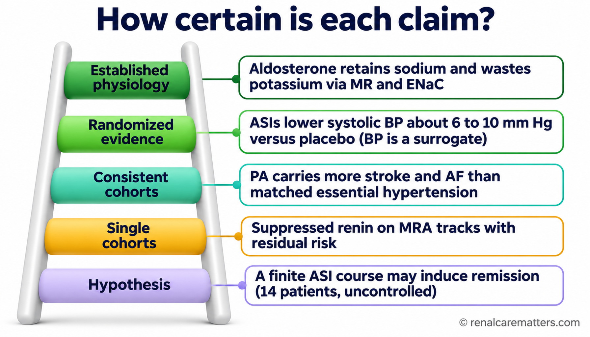
How certain is each claim in this guide: from established physiology to an unproven remission hypothesis.
- MR
- Mineralocorticoid receptor
- ENaC
- Epithelial sodium channel
- ASI
- Aldosterone synthase inhibitor
- BP
- Blood pressure
- PA
- Primary aldosteronism
- AF
- Atrial fibrillation
- MRA
- Mineralocorticoid receptor antagonist
Making the pathway work in the Philippines
- Know the assay. Ask the laboratory whether renin is reported as PRA or DRC and whether aldosterone is measured by immunoassay or LC-MS/MS; write both on the request and result. Apply the matching cutoffs or the laboratory’s validated cut point.
- Pre-analytics. Same-draw potassium; morning seated sample; room-temperature handling of renin; record the drug list, including SGLT2 inhibitors common in Philippine CKD practice.
- Test on therapy first in CKD, heart failure, and resistant hypertension, and reserve supervised withdrawal for discordant results.
- Medical therapy. Spironolactone is widely available and inexpensive. Verify the local availability and cost of eplerenone and amiloride before prescribing; confirm Philippine Food and Drug Administration registration before assuming access to any aldosterone synthase inhibitor.
- Referral. AVS should be done at a center with an established program and cortisol-corrected interpretation. Coordinate contrast-sparing measures in CKD and share results across endocrinology, nephrology, and surgery.
Related: Difficult-to-control hypertension · CKD blood pressure targets · Potassium and CKD · Potassium load calculator
What we still do not know
- Whether universal screening improves hard outcomes at the population level, and how to resource it, given ARR insensitivity for milder renin-independent aldosterone production.
- Validated ARR thresholds in CKD G4 to G5 and dialysis; current cut points derive largely from populations with preserved kidney function.
- Whether renin-targeted MRA titration reduces cardiovascular and kidney events in randomized comparison.
- Whether adrenalectomy and optimized medical therapy differ in kidney outcomes when MRA dosing is adequate.
- Whether a finite course of aldosterone synthase inhibition produces durable remission, in whom, and at what dose.